Doing Business in Panama
2012 Country Commercial Guide for U.S. Companies
INTERNATIONAL COPYRIGHT, U.S. & FOREIGN COMMERCIAL SERVICE AND U.S. DEPARTMENT OF STATE, 2014. ALL RIGHTS RESERVED OUTSIDE OF THE UNITED STATES.
For U.S. companies interested in doing business in or through Panama, Panama’s Country Commercial Guide (CCG) is a great place to start. You can go to www.export.gov/panama/doingbusinessinpanama to see all the reports or you can click on each of the links below. After reading through the CCG, we recommend that you contact us to discuss how we can help you.
Chapter 1: Overview to Doing Business
Chapter 2: Political and Economic Environment
Chapter 3: Selling U.S. Products and Services
Chapter 4: Trade Regulations and Standards
Chapter 5: Exporting to Latin America through Panama
Chapter 6: Investing in Panama
Chapter 7: Trade and Project Financing
Chapter 8: Getting Paid by Your Latin American Buyer
Chapter 9: Business Travel Information
Chapter 10: Top U.S. Export Prospects
Chapter 11: Additional Resources
Return to table of contents
Chapter 1: Doing Business in Panama
- Market Overview
- Market Challenges
- Market Opportunities
- Market Entry Strategy
Market Overview
Return to top
Panama has historically served as the crossroads of trade for the Americas. Its strategic location as a bridge between two oceans and the meeting of two continents has made Panama not only a maritime and air transport hub, but also an international trading, banking, and services center. Panama’s global and regional prominence is being enhanced by recent trade liberalization and privatization, and it is participating actively in the hemispheric movement toward free trade agreements. Panama's dollar-based economy offers low inflation in comparison with neighboring countries and zero foreign exchange risk. Its government is stable and democratic and actively seeks foreign investment in all sectors, especially services, tourism and retirement properties.
Due to the country's historic evolution, which focused resources overwhelmingly on services and transactions, the assembly and manufacturing sectors – largely comprised of production of items such as processed foods, chemical products, construction materials and a small and declining clothing sector - remain severely underdeveloped. Given the higher educational requirements for the service sector jobs Panama’s economy created, this distortion has contributed to great income disparities, with social and economic inequalities marked by a high percentage of the population living at or near the poverty level, with significant underemployment and limited education and other social benefits.
In 2010 the three major credit rating agencies – Standard & Poor’s, Moody’s, and Fitch - all raised their credit ratings for Panama to investment grade, granting the Government of Panama international recognition for recent tax reforms and its record of steady GDP growth while keeping its deficits under control (even in 2009, a dismal year for the world economy, Panama’s economy grew 2.9% and the Government of Panama’s deficit was only 1% of GDP). Not only does the investment-grade rating lower the cost of borrowing for the Government of Panama, but it sends a strong market signal that Panama, even while carrying a debt ratio that is relatively high, is one of only five Latin American countries to achieve this distinction.
Panama's economy is based primarily on a well-developed services sector, accounting for about 75% of GDP. Services include the Panama Canal, banking, the Colon Free Zone, insurance, container ports, and flagship registry. Panama is currently engaged in the Panama Canal expansion project. This project, in conjunction with the expansion of the capacities of its ports on both the Atlantic and Pacific coasts, will solidify Panama’s global logistical advantage in the Western Hemisphere.
This logistical platform has aided the success of the Colon Free Zone (CFZ), the second largest in the world after Hong Kong, which has become a vital trading and transshipment center serving the region and the world. CFZ imports – a broad array of luxury goods, electronic products, clothing, and other consumer products - arrive from all over the world to be resold, repackaged, and reshipped, primarily to regional markets. Because of this product mix, U.S. brand market share is significant, even if most of those products are made in Asia. Hong Kong is the CFZ's biggest supplier, while Colombia and Ecuador are the two largest destinations for exports from the CFZ.
The U.S. is Panama's most important trading partner, with about 30% of the import market, and U.S. products enjoy a high degree of acceptance in Panama. In 2011, U.S. exports to Panama jumped 34% to $8.25 billion – in no small part due to the fact that Panama’s economy grew 10.5%. However, international competition for sales is strong across sectors including telecommunications equipment, automobiles, heavy construction equipment, consumer electronics, computers, apparel, gifts, and novelty products.
Market Challenges
Return to top
Panama’s inflexible labor laws are a source of concern for prospective investors. Firing practices are excessively regulated, reducing labor mobility and inhibiting hiring. While inexpensive in global terms, Panama's minimum wage is relatively high in a Central American context. In addition, competent technical employees fluent in English may be hard to find. These labor issues, coupled with relatively high costs for electricity, result in higher than average unit production costs in Panama.
Instances of questionable government practices continue to affect U.S. investors in Panama. These include bidding procedures, contract obligations, and a slow and imperfect judicial system. The current administration has announced an ambitious agenda of fiscal reform, anti-corruption and transparency improvements, and reform of the Social Security system. With the exception of fiscal reform, however, there has been little to no progress on these fronts. Continued improvements in the areas of educational and judicial reform will be critical for Panama to improve its business competitiveness standing in the region.
International indexes generally rate Panama as one of the best countries in Latin America for business and investment. At the same time, however, U.S. investors have voiced concerns about corruption and inconsistent treatment. For these reasons we encourage U.S. companies interested in investing in Panama to read our report on Investing in Panama thoroughly and to contact us for more information. We also recommend that Americans interested in purchasing property in Panama review the U.S. Citizens Services note.
Market Opportunities
Return to top
Panama has no restrictions on the outflow of capital or outward direct investment. Its accession to the World Trade Organization in mid-1997 opened up trade and lowered tariffs across the board, giving Panama the lowest average tariff rate in Latin America. Panama’s recognition of the U.S. sanitary and phytosanitary system and the creation of a new Food Safety Authority have essentially eliminated the previous slow and arbitrary procedures for issuing phytosanitary permits for U.S. food products.
Consumer attitudes and many brand preferences are similar to the U.S. U.S. television, radio and magazines are all available and popular in Panama. Panamanians frequently travel to the U.S. for vacation, medical treatment, study and business. Their buying patterns and tastes are similar to those of U.S. consumers.
U.S. goods and services enjoy a reputation for high quality and are highly competitive. Panama has in recent years established itself as a regional competitor to Miami for consumer retail, which may result in a larger market than its domestic population would indicate. The country boasts the highest per capita GDP in the region. However, income distribution is highly skewed toward a relatively small, consumer goods-oriented, economically powerful class. This class enjoys a very high level of disposable income. They prefer high quality trend-setting goods where price is a secondary determinant in the purchasing decision.
The expansion of the Panama Canal – a US$5.25 billion project that will double capacity and allow passage of larger post-Panamax vessels - was approved in a national referendum in 2006 and started in 2007. The Government of Panama sees this project as essential to maintaining its stature in global transport and hopes to complete it in 2014. When completed, the project will have a significant impact on U.S. ports, which are already positioning themselves to take advantage of the expansion.
An interesting area for foreign investment is in the former Canal Zone and associated military bases. One of the largest facilities, the former Howard Air Force Base, is being developed into a “new town” with offices, light warehousing, apartments, homes along with shops and restaurants, all within a special economic incentive zone. A number of anchor U.S. clients, e.g. Dell, 3M, Caterpillar, and W.R. Grace, have established growing operations in this area.
Panama is on record as being in favor of free trade agreements (FTAs) and is currently working to implement a Trade Promotion Agreement (TPA) with the U.S. that will result in tariffs immediately dropping to zero for approximately 87% of U.S. exports, with the remainder phased out over time. Panama has full FTAs with El Salvador, Taiwan, Singapore, Chile, Costa Rica, Honduras, Guatemala, Peru and Nicaragua; and partial FTAs with Mexico, Dominican Republic and Cuba. Panama is in the process of implementing an FTA with the European Union while an FTA with Canada is pending ratification by the Canadian Parliament.
Market Entry Strategy
Return to top
Due to its open economy, Panama has few market access problems. One of the more common market entry options is to appoint an agent or distributor. Another option is to find a local partner who can provide market knowledge and contacts. Other businesses have been successful via licenses or franchises.
The U.S. Commercial Service offers U.S. companies market entry assistance through a variety of services, any of which can be tailored to suit your needs. We also will work to defend your business interests in Panama if the need arises. We measure ourselves on our ability to help you do more business in Panama.
Given the ease of air travel between the U.S. and Panama, our Gold Key Service (GKS) is our most popular offering. This service connects you with qualified representatives, distributors, partners, or customers. The U.S. Embassy will conduct background checks, set up the meetings, and provide translation and driving services as part of the package.
Return to table of contents
Chapter 2: Political and Economic Environment
Return to top
For background information on the political and economic environment of country, please click on the link below to the U.S. Department of State Background Notes.
http://www.state.gov/r/pa/ei/bgn/2030.htm#political
Return to the table of contents
Chapter 3: Selling U.S. Goods and Services in Panama
Return to top
Using an Agent or Distributor
Establishing an Office
Franchising
Direct Marketing
Joint Ventures/Licensing
Selling to the Government
Distribution and Sales Channels
Selling Factors/Technique
Electronic Commerce
Trade Promotion and Advertising
Pricing
Sales Service/Customer Support
Protecting Your Intellectual Property
Due Diligence
Local Professional Services
Web Resources
Using an Agent or Distributor
Return to top
According to Panama's constitution, nationals and foreigners are treated equally under the law. Both Panamanian and foreign companies must fulfill the same basic requirements to organize and operate most types of business activities in Panama. There are restrictions on foreigners participating in retail trade and practicing certain professions. In practice, however, there are legal ways to overcome these restrictions. U.S. firms interested in retailing should consult a local attorney. Please contact us for a list of qualified attorneys in Panama.
There is no law regulating the relationship between international suppliers and local agents and distributors. This relationship is only governed by the private agreements made between the parties involved. In cases of contract termination or disputes, the private contract clauses prevail over any other document or practice.
Individuals may engage in business activities in their own names or through legal entities. The most commonly adopted form of legal entity is the corporation (Sociedad Anonima, or S.A.). Other types of legal entities commonly used in Panama are general partnerships, simple limited partnerships, joint stock partnerships, and limited liability companies.
Establishing an Office
Return to top
Establishing an office in Panama is a straightforward process. There is plenty of office space available with many options related to location and cost. Panama has one of the most modern and flexible corporate law frameworks in Latin America. Below are some of the advantages offered by Panamanian corporate law:
Two or more persons of any nationality may organize a corporation for any lawful purpose. They do not have to be domiciled in Panama. The articles of incorporation may be executed anywhere, even outside of Panama, and in any language, provided a Spanish translation is submitted for registration.
There are no requirements regarding the amount paid in capital.
Ownership of a Panamanian corporation may reside in a single individual or corporation and no part of the capital needs to be held by a Panamanian except if it is to undertake certain operations within Panama.
There are no nationality or residence requirements for shareholders.
Neither the directors nor the officers are required to be shareholders.
The Board of Directors must be composed of at least three directors, but one person may hold more than one position.
Meetings of shareholders or directors may be held outside of Panama and through electronic means. Proxies may be used by shareholders/directors.
In order to form a corporation in Panama, the client must furnish the following information:
The name of the corporation. It may be in any language, but it must terminate in a word or abbreviation indicating that it is a corporation.
The objectives and purposes of the corporation.
The amount of the authorized capital. Usually the authorized capital will consist of US$10,000 divided into 100 shares of US$100 each. Shares may be nominative or bearer shares.
Duration of the corporation, usually perpetual.
The full names and addresses of three or more directors and/or officers.
The domicile of the corporation.
The time period usually involved in setting up a corporation is from fifteen days to two months. Attorney fees usually range from US$600 to US$1,500 per corporation.
Every corporation organized pursuant to the laws of Panama must have a resident agent within Panama, who must be an attorney. The annual fee for this service is about US$200. Approximately 400,000 corporations are registered in Panama.
In order to engage in commercial or industrial activities, all corporations, partnerships or individuals must obtain proper authorization from the Ministry of Commerce and Industry. There are three basic types of licenses involved:
Commercial License Class A is required for wholesale operations, commercial and mortgage banks, financial companies, international financial brokers, insurance and reinsurance companies,international transportation companies, mutual funds, public utilities, and high-technology service companies.
Commercial License Class B is required for retail businesses, including representation agencies, service companies, bars, restaurants, drugstores, real estate agents, fuel stations, local transportation, distributors and others. This license is only granted to Panamanians or corporations owned solely by Panamanians.
An Industrial License is required for extractive and manufacturing industries, as well as for construction companies.
Exemptions for business license requirements are granted to persons or legal entities engaged exclusively in agriculture, cattle, bee, or poultry raising, or in the manufacturing and sale of handicrafts, provided that the work is not performed by hired workers. Licenses must be kept at all times in a visible and accessible place. The cost for obtaining a license ranges from US$250 to US$750. Also, an annual tax is levied based on the net worth of the company, as stated in the income tax return, plus other income taxes.
Most service providers are required to withhold a seven percent (7%) value-added tax on most of their services.
Franchising
Return to top
Panama is receptive to U.S. style franchising. The market for both specific and general franchising opportunities is attractive. Panama maintains no control on royalty payments or transfers. Recreation, entertainment services, fast food, automotive, and hotel and motel franchises are readily marketable as the local market demands better facilities and services. The U.S. Embassy recommends consulting a local attorney for details on how to set up a franchise in Panama. Please contact us for a list of qualified attorneys in Panama.
Key factors for market success in Panama are high quality, customer service, brand-name recognition and attractive packaging. U.S. products targeting the middle to upper-middle income market are usually competitive. Panamanians have a penchant for high quality U.S. products.
Consumers with high disposable income follow sophisticated U.S. and European consumption patterns. Many high-end U.S. and foreign brand names are represented in Panama. An aggressive marketing strategy is usually necessary to succeed in this trend-conscious market.
Direct Marketing
Return to top
Local laws allow companies and individuals to import directly with no intervention from agents or distributors. This situation opens the door for a direct marketing approach especially in certain sectors such as industrial goods, industrial machinery, agricultural equipment and other high value equipment or machinery.
Joint Ventures/Licensing
Return to top
Joint ventures, especially for large projects, are becoming common in Panama. Some joint ventures are formed for limited periods of time, such as for a specific construction contract or technology transfer contract. The profits from joint ventures can be distributed annually to each joint venture partner and are taxed in the same manner as any other income.
Panamanian law requires the registration of license agreements, although in practice few licensors and licensees do so. License agreements are frequently used to reinforce rights to registered trademarks. The agreements must be attached to the registered trademark and filed with the Industrial Property Department in the Ministry of Commerce and Industry. The agreement becomes part of the file on the trademark covered.
Panama is an interesting and potentially profitable site for licensing agreements and joint ventures as well as routine buy/sell operations. The Colon Free Zone (CFZ) offers the U.S. exporter looking for regional marketing arrangements a convenient one-stop distribution center. However, there have been instances of money laundering, intellectual property piracy and drug trafficking reported in the CFZ. All U.S. firms should perform due diligence before commencing operations there. Please contact us for assistance in identifying good business partners in the CFZ.
Selling to the Government
Return to top
The law (Law 22) regulating government procurement and other related issues went into effect at the end of 2006. It created the Direccion Nacional de Contrataciones Publicas (National Procurement Office), and was designed to streamline and modernize Panama’s contracting system. One of the highlights of the law is the establishment of an internet-based procurement system http://www.panamacompra.gob.pa. All purchases must be announced in this system, in turn providing greater flexibility, transparency and speed in government purchases. The law also regulates the use of performance bonds, creates an administrative court to deal with procurement-related issues and an office to monitor public tenders (National Directorate for Public Tenders), allows for interest payment in the case of late payments to suppliers, and provides more expedited information access for all participants in the procurement process.
U.S. and other bidders for important government contracts continue to complain of lack of transparency, excessive delays, and bureaucracy in the bid selection process. Requirements may at times be designed to exclude competition and favor a particular supplier. Excessive bureaucracy has been also responsible for the government’s slow payment record. Typical payment schedules range from three to six months after goods or services have been invoiced.
The Panama Canal represents significant business opportunities for U.S. exporters, with annual purchases of as much as $250 million, including port and marine equipment, building materials, industrial equipment and transportation materials and equipment. The $5.25 billion Canal expansion program, currently underway, is opening additional business opportunities for U.S. exporters in a wide range of products and services; to date, the prime contractor for the Canal Expansion has announced over $450 million in U.S. purchases. Despite being a government agency, the Panama Canal Authority (ACP) is a unique organization that by constitutional law is autonomous, runs a profitable and efficient operation, has full control over its budget and enjoys an excellent payment record.
Distribution and Sales Channels
Return to top
Business practices in Panama are very similar to those in the United States. Business tends to be direct and straightforward. On average, Panama City accounts for 65% of total national sales of consumer goods. The remaining 35% is distributed among the principal cities of David, Colon, Santiago and Chitré.
Generally, the marketing channel structure in Panama is simple. Direct importers act as wholesalers and in many cases also as retailers. This situation is common in the case of apparel, automotive parts and hardware products. In the case of consumer goods, food and medicines, the retail operation is separate from the wholesale operation. For industrial goods, sales are normally handled by local exclusive agents or distributors. In other cases, local firms order directly from U.S. brokers or the manufacturer.
Some of Panama's major importers are also regional distributors for Central and/or South America, with warehousing facilities located in the Colon Free Zone (CFZ). Generally, CFZ importers/distributors have affiliated stores in Panama City for retail sale to the local market. We encourage U.S. companies with consumer retail products to look at selling through the Colon Free Zone to the region. For more information on this option please contact us after you read our report
Most of Panama’s trade moves through the Atlantic ports of Manzanillo, Cristobal and Evergreen, and the Pacific Port of Balboa. The Tocumen International Airport handles the bulk of Panama’s air cargo.
Selling Factors/Techniques
Return to top
Panama has the highest per capita income in Central America. However, the majority of income is skewed to a small, consumer goods-oriented economic class. These upper-middle and upper income class families have high levels of disposable income. They are interested in purchasing high quality, trend-setting goods. Price is less of a factor in purchasing decisions made by this class than for the middle and lower income classes. The majority of Panamanians are interested in quality, but price still plays a more important role in the purchase decision.
The use of the U.S. dollar as legal currency and consumer preference for high quality products at competitive prices are two reasons for high acceptance of U.S. products in Panama. Overall, U.S. products are well accepted in the market and are considered of good quality. However, in many instances, U.S. products must compete against lower priced products, especially from Asia. For example, as in the U.S. itself, Japanese and Korean electronics dominate the market because of aggressive market entry techniques and good quality at competitive prices. Note that U.S. brands, many of whom manufacture outside of the U.S., enjoy a prominent position in the marketplace and in the Colon Free Zone. Such brands as Nike, Oakley, and Columbia sportswear fall into this category.
Electronic Commerce
Return to top
Law No. 112, signed on July 30, 2001, was the first law in the region to deal with e-commerce. A revised law (Law No. 55), passed in July 2008, enhanced the legal framework for developing e-commerce activities and strengthened the institutional setting for an effective application and management of the different aspects of e-commerce defined by the law.
Basic features of the e-commerce law are the following:
It gives legal force to any transaction or contract completed electronically.
It makes electronic signature a legal instrument except for real estate transactions and succession purposes.
It creates the National Directorate of Electronic Commerce (Direccion Nacional de Comercio Electronico) as part of the National Commerce Directorate of the Ministry of Commerce and Industry to oversee the application of the law and act as a regulator.
It defines certification organizations, which will issue signature certificates and define operating procedures. A certificate will allow any person or organization to claim legitimacy.
It establishes that certification entities will register on a voluntary basis.
The Panamanian Chamber of Commerce has led a program to increase use of e-commerce, with financial assistance from the Inter-American Development Bank (IDB). A number of Panamanian firms, especially supermarkets and consumer electronic stores, offer e-commerce facilities and more firms are working on providing these facilities.
For more information on e-commerce please contact us at Enrique.Tellez@trade.gov.
Trade Promotion and Advertising
Return to top
Television and newspaper advertising are the promotion tools of choice for the majority of distributors of U.S. products. E-mail marketing is becoming increasingly popular, especially for services. Panama has a very competitive advertising market, with standardized pricing and very good production quality. Additionally, trade shows, specialized seminars and exhibitions are effective tools for trade promotion. Special sale prices during events such as Mother’s and Father’s Day, Back-to-School, and Easter are usually advertised in newspapers during weekends.
Most foreign manufacturers of consumer products maintain a high profile presence in the country through newspaper ads, large billboards, sponsored sports events, and TV advertising. Web based advertising and company promotion is gaining popularity. Radio advertising is mainly used outside of the Panama City metropolitan area.
Major Newspapers:
Business Web Sites:
Pricing
Return to top
The price structure for imported goods in Panama depends on the level of competition. The costs of transportation and import duties vary from item to item. Local prices can be higher or lower than world average depending on local competitive conditions. For the sake of illustration, the calculation below demonstrates average costs added to a product before it reaches the consumer. Import duties average 10% over cost, while insurance, and freight (CIF) value and wholesale and retail markups are about 25% each.
Average Pricing Schedule
- CIF Panama $100.00
- Import Duty (+10%) +10.00
- Total Landed Cost 110.00
- Wholesale Price (+25%) 138.00
- Retail Price (+25%) $172.00
Note: A 7% value-added tax on CIF value plus the import duty is assessed at the time of customs liquidation. Since this value-added tax is payable on all goods, domestic and imported and is passed through to the consumer, it is not included in this calculation.
Once the Free Trade Agreement between Panama and the U.S. is implemented, 87% of duties on imported goods into Panama will drop to 0%. For this reason, we believe that U.S. exporters will be able to maintain a competitive edge in selling, and that they will find that Panamanian buyers are particularly interested in carrying more U.S. brands.
Sales Service/Customer Support
Return to top
Success among distributors is often decided by quality of the training, counseling and support they receive from their principals. U.S. companies should focus on providing U.S.-level training and technical assistance to their distributors and making sure they have the resources to provide after-sales support, including spare parts, service equipment, and quality service to the customers. Note that U.S. companies enjoy a clear advantage over foreign competitors in this area. U.S. products are highly regarded and a pricing strategy should include explicit consideration of presenting the products as a lower cost-of-ownership solution that includes U.S.-caliber aftermarket servicing and maintenance. In doing so U.S. providers may be able to better counter lower cost competitors from China, for instance.
Protecting Your Intellectual Property
Return to top
Introduction
Several general principles are important for effective management of intellectual property rights in Panama. First, it is important to have an overall strategy to protect IPR. Second, IPR is protected differently in Panama than in the U.S. Third, rights must be registered and enforced in Panama under local laws. Companies may wish to seek advice from local attorneys or IP consultants. Please contact us at Daniel.Crocker@trade.gov for a list of qualified attorneys in Panama.
It is vital that companies understand that intellectual property is primarily a private right and that the U.S. Embassy generally cannot enforce rights for private companies in Panama. It is the responsibility of the rights' holders to register, protect, and enforce their rights where relevant, retaining their own counsel and advisors. While we are willing to assist you, there is little we can do if the rights holders have not taken these fundamental steps necessary to securing and enforcing their IPR in a timely fashion. Moreover, in many countries, rights holders who delay enforcing their rights in the mistaken belief that the US Embassy can provide a political resolution to a legal problem may find that their rights have been eroded or abrogated due to doctrines such as statutes of limitation or unreasonable delay in prosecuting a law suit. In no instance should our advice be seen as a substitute for the obligation of a rights holder to promptly pursue his case.
It is always advisable to conduct due diligence on partners. We recommend conducting more due diligence than would be normal for the U.S. A good partner is an important ally in protecting IP rights. Keep an eye on your cost structure and reduce the margins (and the incentives) of would-be bad actors. Projects and sales in Panama require constant attention. Work with legal counsel familiar with Panama laws to create a solid contract that includes non-compete clauses, and confidentiality/non-disclosure provisions. In certain instances we can assist you with conducting due diligence by conducting a background check through our Business Facilitation Service. For more information on this service, please contact us.
We also recommend that small and medium-size companies understand the importance of working with trade associations and organizations to support efforts to protect IPR and stop counterfeiting. There are a number of these organizations, both in Panama and the U.S.
We recommend that you start with the U.S. Government resources at Stopfakes.gov and then go to:
IPR Resources
A wealth of information on protecting IPR is freely available to U.S. rights holders. Some excellent resources for companies regarding intellectual property include the following:
For information about patent, trademark, or copyright issues - including enforcement issues in the U.S. and other countries - call the STOP! Hotline at 1-866-999-HALT or register at www.StopFakes.gov.
For more information about registering trademarks and patents (both in the U.S. as well as in foreign countries), contact the U.S. Patent and Trademark Office (USPTO) at 1-800-786-9199.
For more information about registering for copyright protection in the U.S., contact the U.S. Copyright Office at 1-202-707-5959.
The U.S. Commerce Department has positioned IP Attachés in key markets around the world. Mr. Albert Keyack, based in Rio de Janeiro, Brazil, covers Panama. He can be contacted at albert.keyack@trade.gov or at 011-55-21-3823-2499.
IPR Climate in Panama
Panama has an adequate and effective domestic legal framework to protect and enforce intellectual property. Intellectual property policy and practice in Panama is the responsibility of an inter-institutional Committee for Intellectual Property (CIPI), which includes representatives from five government agencies (Colon Free Zone, Offices of Intellectual Property Registry and Copyright under the Ministry of Commerce and Industry, Customs, and the Attorney General) under the leadership of the Ministry of Commerce and Industry (MICI). Individuals can search their website, http://www.digerpi.gob.pa, for information in Spanish about trademarks, patents, plant varieties, collective rights, and various legal documents.
Laws 15 (1994) and 35 (1996) as amended are the basis for Panama’s intellectual property regime. Law 1 (2004) added crimes against intellectual property as a predicate offense for money laundering; Law 14 (2007) establishes a five to 12 year prison sentence, plus possible fines. Law 10 (2011) moved the Copyright Office from the Ministry of Education to MICI. In 1997, the Customs Directorate created a special office for IPR enforcement, followed by a similar office created by the Colon Free Zone in 1998. Since June 1997, two district courts and one superior tribunal have been exclusively adjudicating anti-trust, patent, trademark, and copyright cases. Beginning in January 2003, there has been an IPR-specific prosecutor with national authority, which has consolidated and simplified prosecution of those cases.
However, Panama ranked 133 out of 142 by the 2011 World Economic Forum in judicial independence (not just on intellectual property issues), and the Embassy is aware of complaints by U.S. companies about judicial irregularities and corruption relating to intellectual property cases, and has raised the issue with relevant government authorities. Given Panama’s role as a transshipment point and limited resources dedicated to addressing IPR (and other) issue, U.S. industry remains concerned that the Colon Free Zone is a conduit for trading in pirated and counterfeit goods.
Mortgages, liens, and other security interests are recognized and registered in the public registry. Much of the information contained in the public registry is available on-line. The public property registry has been expanded and modernized. Unique features of Panamanian law and practice in specific areas (including but not limited to banking, accounting requirements, formation and functioning of corporations, and taxation) make retention of local legal counsel highly advisable.
Panama is a member of the World Intellectual Property Organization (WIPO), the Geneva Phonograms Convention, the Brussels Satellite Convention, the Universal Copyright Convention, the Bern Convention for the Protection of Literary and Artistic Works, the Paris Convention for the Protection of Industrial Property, and the International Convention for the Protection of Plant Varieties. In addition, Panama was one of the first countries to ratify the WIPO Copyright Treaty and the WIPO Performances and Phonograms Treaty, although the GOP has yet to introduce implementing legislation to put these treaties fully into force in Panama and to establish new offenses, such as those needed for internet-based copyright violations and to enhance border measures.
On June 28, 2007, the United States and Panama signed the United States-Panama Trade Promotion Agreement (TPA). Panama approved the TPA on July 11, 2007. The US Congress approved implementing legislation on October 12, 2011, and President Obama signed it on October 21, 2011. Presidents Obama and Martinelli have agreed to implement the TPA as quickly as possible, but no date has been set for it to enter into force. The TPA provides for improved standards for the protection and enforcement of a broad range of intellectual property rights, which are consistent with U.S. standards of protection and enforcement and with emerging international standards. Such improvements would provide for improved standards for the protection and enforcement of a broad range of IPR, including protections for patents, trademarks, undisclosed test and other data submitted to obtain marketing approval for pharmaceuticals and agricultural chemicals, and digital copyrighted products such as software, music, text, and videos. Under the TPA, Panama would be obligated to ratify or accede to the Patent Cooperation Treaty, the Convention Relating to the Distribution of Programme-Carrying Signals Transmitted by Satellite, and the Budapest Treaty on the International Recognition of the Deposit of Microorganisms for the Purposes of Patent Procedure by the date the TPA enters into force. Panama would also be obligated to ratify or accede to the International Convention for the Protection of New Varieties of Plants and the Trademark Law Treaty. The TPA confirms that the obligations do not and should not prevent the United States or Panama from taking measures to protect public health, in accordance with the Doha Declaration on the TRIPS Agreement and Public Health, by promoting access to medicines for all. The TPA also obligates Panama to enforce intellectual property rights in administrative, civil, and criminal proceedings, and at the border.
Copyrights
The National Assembly in 1994 passed a comprehensive copyright bill (Law 15), based on a World Intellectual Property Organization model. Law 15 provides copyright protection based on the life of the author plus 50 years. If there are co-authors, the protection is until 50 years after the death of the last author. Collective works, software and audiovisual works are also covered for 50 years since the date of publication or after the work is finished (with no publication). The law modernizes copyright protection in Panama, provides for payment of royalties, facilitates the prosecution of copyright violators, protects computer software, and makes copyright infringement a felony. Though Panama’s 1994 copyright law modernized copyright protection and amendments to the law in 2004 provided for a special Copyright Office with anti-piracy enforcement powers, piracy remains a problem. Films in theatrical release are often downloaded to DVDs and videos, reproduced on optical discs, and then distributed by street vendors.
The TPA requires implementation of the WIPO Treaties in a manner consistent with the U.S. digital Millennium Copyright Act. The TPA would also extend copyright protection to life of the author plus 70 years; would require both governments to mandate the use of legal software in government agencies; and would include provisions to protect against the theft of encrypted satellite signals and the manufacturing or sale of tools to steal such signals.
Patents
Panama is a member of the Paris Convention for the Protection of Industrial Property. Panama’s Industrial Property Law (Law 35 of 1996) provides a term of 20 years of patent protection from the date of filing. Law 35 provides specific protection for trade secrets.
Under the TPA, Panama would make patents available for any invention, subject to limited exclusions. Additionally, Panama commits to make best efforts to process patent applications and marketing approval applications expeditiously. With respect to most products, Panama must provide adjustments to the patent term to compensate for unreasonable delays that occur while granting a patent. For pharmaceutical products, Panama may, but is not required to, adjust the patent term if there is an unreasonable delay in granting a patent or providing marketing approval for a product. In addition, Panama commits to protect for specific periods of time test data and other information that pharmaceutical and agricultural chemical companies submit to government regulators in order to secure regulatory approval for their patented products. When relying on the previous approval of a pharmaceutical product in the United States, and upon meeting certain other conditions for expeditious approval, the period of protection for test and other data in Panama will be counted from the date of approval of that product in the United States.
Trademarks
Panama’s legal system provides for a trademark protection regime, which includes a simplified process of trademark registration, and the ability to renew a trademark for 10-year periods. However, U.S. companies report judicial irregularities and corruption once the cases reach the courts. In one case, a U.S. multinational’s brand was illegally copied and the Colon Free Zone-based distributor of the IPR-infringing goods has continued to sell the knock-offs pending resolution of the case in the courts.
Law 35 provides trademark protection, simplifies the process of registering trademarks and allows for renewal of a trademark for ten-year periods. An important feature of the law is the granting of ex-officio authority to government agencies to conduct investigations and to seize materials suspected of being counterfeited. Decrees 123 of November 1996 and 79 of August 1997 specify the procedures to be followed by Customs and Colon Free Zone (CFZ) officials in conducting investigations and confiscating merchandise. In 1997, the Customs Directorate created a special office for IPR enforcement, followed by a similar office created by the CFZ in 1998. The Trademark Registration Office has undertaken significant modernization with a searchable computerized database of registered trademarks that is open to the public as well as online registration.
The Trademark Registration Office’s website allows applicants to track the status of their Trademark and Patent applications and creates a Customer Service Center. The Trademark Registration Office claims to be the most advanced in the region, with 90% automation. This office reports that it has reduced trademark registration processing time in half, down from one year to six months. This office also reports that it has conducted classes on the importance of IPR protection at the Technical University of Panama and recently sponsored a National Inventor's Competition that brought inventors together with prospective investors and customers.
Under the TPA, Panama must protect trademarks and geographical indications, including by refusing protection or recognition of a geographical indication that is likely to be confusingly similar to a preexisting trademark. Panama must also have a system of registration that provides efficient and transparent procedures governing applications to protect trademarks and geographical indications.
Due Diligence
Return to top
It is important to conduct due diligence in order to assess the credibility/background of a business prospect. In certain instances we can assist you with conducting due diligence by conducting a background check through our Business Facilitation Service. For more information on this service, please contact us at 011-507-317-5000 or at daniel.crocker@trade.gov.
The following websites can be useful in obtaining information on corporations/individuals.
For affiliation with major chambers of commerce:
Local Professional Services
Return to top
For insurance services: Panamanian Insurance Association (APADEA): 507-225-9475.
Additional Web Resources
Return to Top
For more information on Industrial property protection you can go to this site.
For more information on procurement law and on “Panamacompra” please access this site.
For information on Panama Canal procurement opportunities please access this website.
Return to table of contents
Chapter 4: Trade Regulations and Standards in Panama
- Import Tariffs
- Trade Barriers
- Import Requirements and Documentation
- U.S. Export Controls
- Temporary Entry
- Labeling and Marking Requirements
- Prohibited and Restricted Imports
- Customs Regulations and Contact Information
- Standards
- Trade Agreements
- Contacts
Import Tariffs
Return to top
The current Panamanian government, led by President Ricardo Martinelli, took office in July 2009. When Panama joined the WTO in 1997, the government lowered tariffs to a maximum of 15%, except for a few agricultural products, and to an overall average of 12%, the lowest in the region. The revised import duty structure was significantly lower than the one negotiated for WTO accession and represented a substantial commitment to trade liberalization.
Trade Barriers
Return to top
As part of the concluded negotiations for the Trade Promotion Agreement between the U.S. and Panama, the previous administration approved a Phytosanitary Agreement that eliminated sources of discretion and abuse in the import approval process, thus lifting any existing phytosanitary barriers. Panama has no other trade barriers.
Import Requirements and Documentation
Return to top
Import Licenses
No import licenses are required in Panama. Any company holding a commercial license can freely import goods into Panama. A commercial or industrial license is required by individuals or companies wishing to engage in commercial or industrial activities. Phytosanitary permits are required to import non-food agricultural products only. Special import permits are required for all types of firearms, ammunition, fertilizers, and certain foods. Import permits can be obtained from the Ministry of Security.
Export Controls
The Fiscal Code regulates all matters concerning the country's exports. The Code establishes that all national products may be exported, except:
Drugs, with the exception of those having pharmaceutical or scientific purposes.
Staple products determined by the government to be temporarily scarce in the country.
Those products the Panamanian government decides not to export for reasons of international agreements or for the economic interest of the country.
Law 61 of 2002 abolished the requirement for some exports (primarily metals and natural resources) to pay taxes.
Import Documentation
Return to top
Processing of customs documents in Panama for imports is fast, efficient and reliable. Merchandise imported into Panama must be cleared through customs by a customs broker licensed by the government of Panama. The following goods are imported under duty free status: those that are consigned to national or municipal governments, imported by foreign diplomats, consigned to the Panama Canal, sold to vessels transiting the Canal, or intended for re-export.
Basic import documentation required by the Panamanian Customs office includes:
Import Declaration (prepared and signed by a customs broker).
Commercial Invoice (original plus four copies to be presented in English or Spanish).
Airway Bill.
Bill of Lading (to be presented in triplicate).
Commercial license number.
Phytosanitary Certificate (In case of animal and plant products, to be obtained from the U.S. Department of Agriculture), and previous authorization from the Panamanian Food Safety Authority (AUPSA).
Certificate of Free Sale (if required).
Certificate of Origin (if required).
Any food product or other item used for human consumption (including for use on human skin or clothes) may be subject to the Certificate of Free Sale (CFS) documentation requirement. The main purpose of the CFS is to verify that a product is sold freely and used widely in the U.S. Potential exporters of items subject to the CFS documentation requirement may wish to contact the Food and Drug Administration, Division of Programs and Enforcement Policy, 200 C Street, SW, Washington, DC 20204. As of the date of this publication, the relevant FDA guidance can be found here: http://www.fda.gov/RegulatoryInformation/Guidances/ucm125789.htm.
The bill of lading must be presented for the clearance of goods without exception. If for any reason any other required document cannot be presented within 24 hours after the shipment has arrived, clearance of the goods will be permitted by posting a bond equal to the amount of import duties. The bond is canceled if the prescribed documents are presented in due form within a period of 90 days. The bond may be extended in justified cases, an additional 90 days.
Export Documentation
Return to top
The Vice Ministry of Foreign Trade (VICOMEX) was created in 1998 to promote exports and investment. It facilitates the processing of export documentation through a "One Stop" (Ventanilla Unica) office that can reduce the export process to a few hours.
Export documentation required by Panamanian customs authorities includes:
Commercial invoice.
Export declaration (usually prepared and signed by a customs broker).
Certificate of Origin (issued by the Chamber of Commerce, Industry and Agriculture of Panama, VICOMEX, or SIP/Sindicato de Industriales de Panama and approved by VICOMEX).
Bill of Lading.
Airway Bill.
Veterinary, Sanitary or Phytosanitary Certificate (when applicable).
There is no requirement to use export brokers for export documentation.
U.S. Export Controls
Return to top
There are no specific U.S. export controls regarding Panama, with the exception of fire arms, ammunition and certain high tech goods that require U.S. export licenses.
Temporary Entry
Return to top
The Panamanian Fiscal Code establishes a temporary entry regime of 90 days for all types of merchandise. This temporary entry may be extended for up to one year. There are two options for temporary entry. First, the goods can enter the country if the importer makes a deposit equivalent to the import duty. This payment will be reimbursed at the time the goods leave the country. Second, an insurance company can issue a bond for the importer covering the import duty value, payable if the goods fail to exit the country as scheduled.
Special temporary provisions apply in the case of trade shows and exhibitions taking place at Panama's exhibition and convention center, Atlapa. Goods can enter the Atlapa Convention Center with no warranty payment or bond required. Certain shows held at Atlapa enjoy duty free status and the merchandise displayed may be sold off the floor with no duties.
Samples with commercial value are subject to temporary entry requirements. Samples with no commercial value are admitted duty free. If samples arrive in large containers, they will be dutiable even though they may be marked as free samples.
Labeling and Marking Requirements
Return to top
Local regulations require labels to be in the Spanish language, although this is not enforced at present, except for medicines, agricultural chemicals, toxic products, and food products that require specific instructions or warnings due to human health risks. Labels are required to have basic information regarding the name and address of manufacturer, expiration date, list of ingredients, lot number, and the product from, e.g. powder, liquid, etc.
In general, products which comply with U.S. labeling and marking requirements are accepted for sale in Panama. Food products labeling and marking must comply with CODEX Alimentarius guidelines.
All goods arriving in Panama intended for re-exportation immediately must be marked "PANAMA IN TRANSIT" on each box or outside container.
Prohibited and Restricted Imports
Return to top
The following products may not be imported into Panama:
- Counterfeit coins or printed material that imitates currencies.
- Equipment or instruments for manufacturing coins.
- Liquors, wines, beers or medicines with labels that falsely describe contents, or of any kind of harmful preparation.
- Certain firearms or war materials.
- Foreign lottery or raffle tickets.
- Opium in the form of gum or for smoking.
- Obscene brochures, books, newspapers, magazines, or postcards containing negative portrayals of the country's culture, civilization or dignity.
- Plants, seeds, or animals when determined by the Ministry of Agriculture.
Customs Regulations and Contact Information
Return to top
Customs Regulations
Panama assesses import duties on an ad valorem basis. The ad valorem system uses the declared CIF value as the basis for import duty calculations and in some cases utilizes historical price information as a reference.
In addition to the duty, all imports into Panama are subject to a 7 percent transfer or value added tax (ITBM) levied on the CIF value, plus import duty and other handling charges. Pharmaceuticals, foods and school supplies are exempt from the ITBM tax.
When the Trade Promotion Agreement between the U.S. and Panama is fully implemented, some 87% of U.S. products will enter Panama duty free. For other products, duties may be phased out over time. Since there are a number of exceptions it is a good idea to check what products fall under the duty free regime. We suggest that U.S. exporters go through the following process to determine duties today and in the future:
- Customs Info Database - shows you tariffs/duties that Panama is currently assessing. You can access this database by simply signing up with your email address. Note: Panama already allows duty-free imports for certain projects, e.g. Canal expansion or Metro construction. Please contact us for more information on these exceptions.
- Tariff Tool for Free Trade Agreements – shows you how tariffs will be phased out for any particular good in any country that has a Free Trade Agreement (current or pending) with the U.S. Cautionary note: this tool does not show agricultural products. In addition, it is not completely accurate for current tariff rates; instead, it shows what Panama is allowed to charge, which may be higher.
Beginning in 1995, Panama adopted the Harmonized System (HS) or Tariff Nomenclature as its customs classification system.
In general, the Panamanian customs system does not represent a significant obstacle for U.S. exporters.
Contact information for the Panamanian customs’ office is:
Direccion General de Aduanas P.O. Box 0819-07729 Panama, Panama Phone: 507-506-6407 Fax: 507-506-6240
Contact: Gloria Moreno de Lopez, Director E-Mail: Maritza.delopez@ana.gob.pa www.aduanas.gob.pa
Standards
- Overview
- Standards Organizations
- Conformity Assessment
- Notify U.S. Service
- Product Certification
- Accreditation
- Publication of Technical Regulations
- Contacts
Standards Overview
Return to top
As a WTO member, Panama implemented the WTO's Agreement on Technical Barriers to Trade (TBT) that includes the Code of Good Practice for the Preparation, Adoption and Application of Standards. The government of Panama (GOP) passed Law 23 of July 15, 1997, which established new dispositions on product standards, labeling and certification policy, and redefined the functions of the Directorate General of Standards and Industrial Technology (DGNTI) and the Panamanian Commission for Industrial and Technical Standards (COPANIT). Basically, DGNTI was given the main role in establishing standards and technical regulations, while COPANIT was given an advisory role to DGNTI. The National Council for Accreditation (CNA) was charged with all national accreditations.
Panama has an open economy and there are no significant market access problems related to standards and technical regulations. Certain market access problems have occurred in the past with several agricultural products, but they have been mostly related to phytosanitary issues.
According to WTO guidelines, Panama informs WTO of any standards or technical regulations activities. U.S. companies can participate in the standards development process by contacting DGNTI and submitting specific requests or suggestions. There are no limitations to participation by foreign countries.
Products for which Panama has not set standards/regulations can enter the Panamanian market provided that they comply with standards and technical regulations from the U.S., Europe or any other industrialized country.
Standards Organizations
Return to top
The Directorate General of Standards and Industrial Technology (DGNTI) establishes technical regulations and standards in Panama. Because of budget and other limitations, this organization has been mostly dedicated to establishing standards for food products upon specific requests by industrial organizations and according to WTO guidelines. DGNTI establishes a semiannual working plan showing all activities it will undertake for the following six months. DGNTI performs its functions through its three departments: Standards, Certifications and the Information Center.
U.S. Government’s “Notify U.S.” Service
Return to top
Member countries of the World Trade Organization (WTO) are required under the Agreement on Technical Barriers to Trade (TBT Agreement) to report to the WTO all proposed technical regulations that could affect trade with other Member countries. Notify U.S. is a free, web-based e-mail subscription service that offers an opportunity to review and comment on proposed foreign technical regulations that can affect your access to international markets. Register online at http://www.nist.gov/notifyus/.
Conformity Assessment
Return to top
While DGNTI leads in conducting conformity assessments, it is joined by a number of other public and private organizations. These organizations include the Central Laboratory of Health from the Ministry of Health (MINSA), the University of Panama, the Technological University of Panama, the National Secretariat of Science and Technology (SENACYT), the Ministry of Agricultural Development (MIDA), the Consumer Protection Authority and Defense of Competition, and the Agricultural Marketing Institute (IMA). Panama does not have any Mutual Recognition Agreement (MRA) with U.S. organizations.
Product Certification
Return to top
Once the conformity assessments have been conducted, the DGNTI will issue a conformity assessment certificate. DGNTI is the only organization authorized to issue conformity assessments related to products. Other private organizations such as SGS and Bureau Veritas deal with conformity assessments on system or procedures and can issue certificates, but only related to systems.
Accreditation
Return to top
The National Council for Accreditation (CNA) created by Law 23, July 15, 1997, is the government authority in charge of all national accreditations. This Council is formed by a number of government organizations including the Ministries of Commerce, Health and Agricultural Development, and the National Secretariat of Science and Technology (SENACYT). The CNA works through a technical secretariat, which is the technical body of the Council. Accreditation is largely voluntary.
The technical secretariat appoints accreditation committees, which are groups formed by specialists from the public and private sectors. These committees provide basic input for CNA decisions. Accreditation is obligatory for organizations that deal with fuel laboratories and environmental testing laboratories. All other accreditations are voluntary. Accreditation can be granted in three categories: Laboratories (calibration and testing), inspection organizations, and certifying organizations. As of December 2010 there were fifteen organizations that had been accredited by CNA, but there were several accreditation applications under review.
Publication of Technical Regulations
Return to top
All final technical norms and regulations are published by the Ministry of Commerce and Industry in the Official Gazette or “Gaceta Oficial.”
Law 23 requires that the Panamanian Commission for Industrial and Technical Standards (COPANIT) and the General Directorate of Standards and Industrial Technology (DGNTI) publish all agreements, technical regulations, norms and procedures.
Official Gazette or Gaceta Oficial Panama, Rep. of Panama Tel. (507) 527-9393 Fax. (507) 527-9391
The WTO TBT Inquiry Point and National Information Center is:
Comision Panameña de Normas Industriales y Tecnicas (COPANIT) P.O. Box 0815-01119 Panama, Rep. Of Panama Tel. (507) 560-0716 Fax. (507) 560-0721 E-mail: dgnti@mici.gob.pa http://www.mici.gob.pa
Trade Agreements
Return to top
Panama has full FTAs in force with (including date of entry into force): El Salvador (2003), Taiwan (2004), Singapore (2006), Chile (2008), Costa Rica (2009), Honduras (2009), Guatemala (2009), Nicaragua (2010), and Peru (2012). Panama has partial FTAs with Mexico (1985), Dominican Republic (1987), and Cuba (2009). It has completed negotiations on two more agreements: Canada (signed in 2010 and passed by the Panamanian National Assembly in 2010) and the European Union (signed in 2010).
On June 28, 2007, the United States and Panama signed the United States-Panama Trade Promotion Agreement (TPA). Panama approved the TPA on July 11, 2007. The US Congress approved implementing legislation on October 12, 2011, and President Obama signed it on October 21, 2011. Presidents Obama and Martinelli have agreed to implement the TPA as quickly as possible, but no date has been set for it to enter into force. When the TPA enters into force, it will result in significant liberalization of trade in goods and services, including financial services. The TPA also includes important disciplines relating to customs administration and trade facilitation, technical barriers to trade, government procurement, investment, telecommunications, electronic commerce, intellectual property rights, and labor and environmental protection. Under the TPA, U.S. firms will have better access to Panama’s services sector than Panama provides to other WTO Members under the General Agreement on Trade in Services. All services sectors are covered under the TPA except where Panama has made specific exceptions. Moreover, Panama agreed to become a full participant in the WTO Information Technology Agreement. Panama has also entered into a bilateral agreement with the United States that resolved a number of regulatory barriers to trade in agricultural goods ranging from meat and poultry to processed products, including dairy and rice.
Panama is a beneficiary of the Caribbean Basin Economic Recovery Act, better known as the Caribbean Basin Initiative (CBI), which provides for one-way free trade access for specific Panamanian exports to the U.S.
Panama has bilateral investment agreements with the United States, the United Kingdom, France, Switzerland, Germany, Taiwan, Canada, Argentina, Spain, Chile, Uruguay, the Czech Republic, Netherlands, Cuba, Mexico, Dominican Republic, Korea Ukraine, Sweden, Qatar, Finland, and Italy. The U.S.-Panama Bilateral Investment Treaty (BIT) entered into force in 1991 (with additional amendments in 2001 to reflect Panama's joining the International Center for the Settlement of Investment Disputes (ICSID). Once in force, the investor protection provisions in the TPA will supplant those in the BIT. Nevertheless, the TPA preserves for ten years the option for investors to invoke dispute settlement under the BIT with respect to investments covered by the Treaty as of the date of entry into force of the TPA, in the case of disputes that arose prior to the date of entry into force of the TPA, and for disputes arising on or after the date of entry into force of the TPA out of an investment agreement that was in effect before the date of entry into force of the TPA.
Contacts
Return to top
Ministerio de Comercio e Industrias (Ministry of Commerce and Industry)
Ricardo Quijano, Minister P.O. Box 0815-01119 Panama, Republic of Panama Tel: (507) 560-0661 Fax: (507) 560-0663 www.mici.gob.pa
Direccion General de Normas y Tecnologia Industrial (DGNTI) Contact: Vacant, Director General P.O. Box 0815-01119 Panama, Rep. of Panama Tel. (507) 560-0716 Fax. (507) 560-0721 E-mail: dgnti@mici.gob.pa
Comision Panameña de Normas Industriales y Tecnicas (COPANIT)
Contact: Ahmed Moron, Acting Director P.O. Box 0815-01119 Panama, Rep. of Panama Tel. (507) 560-0716 Fax. (507) 560-0721 E-mail: dgnti@mici.gob.pa
Consejo Nacional de Acreditacion (CNA) Contact: Ahmed Moron, Section Chief P.O. Box 0815-01119 Panama, Republic of Panama Phone: (507) 560-0715 Fax: (507) 560-0715 E-mail: aemoron@mici.gob.pa http://www.cna.gob.pa
Ministerio de Desarrollo Agropecuario (Ministry of Agricultural Development)
Oscar A. Osorio, Minister P.O. Box 0816-01611 Panama, Republic of Panama Tel: (507) 507-0601 Fax: (507) 232-9045 www.mida.gob.pa
Ministerio de Salud, (Ministry of Health) Dr. Franklin Vergara, Minister P.O. Box 0816-01611 Panama, Republic of Panama Tel: (507) 512-9100 Fax: (507) 512-9240 www.minsa.gob.pa
Return to table of contents
Chapter 5: Sell Through Panama’s Colon Free Trade Zone to the Region – A U.S. Export Opportunity
Overview
The Colon Free Trade Zone (CFZ) offers a remarkable opportunity to U.S. companies in the consumer retail sector. It is currently the world’s second largest free trade zone – trailing Hong Kong – but is much more accessible for merchants from throughout Latin America. In the CFZ, a U.S. exporter can sell to one merchant, duty free, and then expect to see his products distributed and retailed throughout Central America, the Caribbean, and the Andean region of South America as a result.
The ideal U.S. company for this sort of model is one that is making a consumer retail item in the U.S. that already enjoys strong domestic sales to such mass merchants as Walgreen’s, Target, or Wal-Mart. However, the CFZ also enjoys strong sales in all areas of consumer retail, such as sporting goods, jewelry, perfumes, electronics, and clothing at all price points. So if you were to imagine any consumer good, from a lower end item at a Wal-Mart to a higher end luxury item at a Neiman Marcus, you would probably be able to find it for sale in the CFZ.
Benefits
U.S. consumer retail companies using this method of export to Latin America could:
Save Time. Instead of traveling to every Latin American country where there might be export prospects, talking with merchants, agents, representatives, and distributors, you would only need to go to one location – Panama, which is highly accessible given its prominence as a regional air hub.
Grow Sales. Because the CFZ is the world’s second largest free trade zone, with exports of $10 billion and growing, retailers from many countries in Latin America simply schedule regular shopping trips to CFZ merchants. When they order, they order in wholesale quantities – the target retailer buying in the CFZ is frequently a department store owner with 10-15 stores in his country of origin.
Reduce Complexity. You sell in dollars to a CFZ merchant. The entry is duty free. And you are only selling to one entity – therefore you only have one relationship to manage. Finally, the CFZ is co-located with some of the world’s largest transshipment ports, meaning that it is easy for merchants to pick and pack customized shipments to any one of a number of otherwise small Latin American ports of entry.
Reduce Financial Risk/Make More Money. You are selling to established CFZ merchants. They in turn make their money by showcasing your products. They know their customers and are able to offer financial terms based on creditworthiness. These terms in turn allow you to sell more product instead of having to bear the risk of offering terms or losing the sale. In addition, you do not have any duties to pay – those end up being the responsibility of the final buyer once your goods enter that country. And finally, you are outsourcing the regional distribution to an expert. It is if you had, in a good CFZ merchant, a representative, financier, and third party distributor all rolled up into one, not only for Panama but for Latin America.
Limitations
Consumer Retail Only. No perishables and very little large capital equipment is sold through the CFZ. There is increasing activity for wholly owned regional distribution activity, as well as specialized third party logistics, handling products ranging from inexpensive shoes to high value pharmaceuticals. But for the most part, the products are basically what you would see in a U.S. shopping mall, from anchor stores through boutiques and specialty chains.
Some CFZ Merchants Should be Avoided. Traditionally the CFZ, with its tradition of moving large amounts of merchandise and conducting some $18 billion annually of business, largely in cash, has had a bit of a frontier atmosphere. However, most of the business being conducted in the CFZ is entirely legitimate and the area inside the CFZ is very safe. The Commercial Service in Panama works closely with other sections of the U.S. Embassy to screen out merchants that should be avoided. We know the best merchants, and those merchants have every incentive to maintain their reputation. So please contact us before agreeing to conduct business with any merchant.
The Best CFZ Merchants Know Their Value. If you think about the value that a solid merchant is offering you – a strong retail customer base, ability to offer terms, effective third party logistics co-located with significant transshipment operations – then you may need to be prepared to bargain hard for a margin that works for your business as well as the merchant’s. You are in a strong position if you can show solid sales in the U.S. already, but without an established history of top-line revenues, you would find negotiating with a good CFZ merchant to be a real challenge.
We Can’t Assist You With non-U.S. Content. Given the product range, it should come as no surprise that most of what is distributed through Colon is made in Asia these days. U.S. content participation ranges from 6-8%, even while U.S. branded content is much higher (think of Nike shoes, Columbia Sportswear, or General Electric electronics). If you have a product that is largely made outside of the U.S., we may not be able to assist you.
Brazil and Mexico Are Separate. Brazil and Mexico both have large populations and an internal buying structure. You are better off pursuing a direct strategy there.

Background
Panama has long been known for being a transit point for goods, most recently through the Panama Canal. Although the percentage of world trade that passes through the Panama Canal has diminished to 5% in recent years, the Canal continues to play a key role in regional trade. We believe that the CFZ will grow dramatically with the successful expansion of the Panama Canal in 2014.
Here is why – in the next couple of years, the majority of container capacity will be on vessels that are too large to transit the Canal currently – so-called Post-Panamax ships. But with the expansion of the Canal, vessels up to 12,000 TEUs – all but a very small percentage of super-Post Panamax ships – will suddenly have a new option for all-water transit through the Canal from Asia to markets in North America, Latin America, and Europe. As a result, ports in the region are investing heavily in deep water capacity and transshipment capabilities.
For this reason, we believe that the increased traffic through the Canal, primarily from the Pacific to the Atlantic, will result in greater transshipment activity. Why? Because most ports in Central America, South America, and the Caribbean will not be able to accommodate vessels that are 6,000 + TEUs. So once their cargo transits the Canal, there is an opportunity to break the containers down and redistribute them via smaller vessels throughout the region. And the CFZ is collocated with the premier transshipment ports in the region.
Next Steps
Contact us (see below). We can help you work through whether or not the CFZ represents a good opportunity to explore. If we think you do, we’ll encourage you to fly down to Panama and we’ll take you to Colon (about 50 miles away from Panama City) to look at the CFZ, meet with key merchants, and make a pitch if you’re inclined to. We’ll assist with a driver, interpreter, car, and of course the qualified meetings with the best merchants in CFZ.
Comments Comments and Suggestions: We welcome your comments and suggestions regarding this market research. You can e-mail us your comments/suggestions to: Customer.Care@mail.doc.gov. Please include the name of the applicable market research in your e-mail. We greatly appreciate your feedback.
Chapter 6: Investment Climate in Panama
Executive Summary
Panama’s investment climate is generally positive. The country’s sterling economic success is based on a strong macro-economic policy and excellent management of the Panama Canal and associated transportation services. Panama has enjoyed some of the highest economic growth in Latin America in the past decade, and most observers predict continued strong growth in the years ahead due to stable and consistent macro-economic policies. Growth tallied 10.5% in 2011 and 7.5% in 2010, after a deceleration to 3.2% in 2009. The Government of Panama (GOP) has promoted economic growth over the last decade through open market policies and by encouraging trade. At the same time, however, U.S. investors have voiced concerns about corruption and inconsistent treatment. For these reasons we encourage U.S. companies interested in investing in Panama to read this report thoroughly and to contact us for more information.
Sections
- Openness to Foreign Investment
- Conversion and Transfer Policies
- Expropriation and Compensation
- Dispute Settlement
- Performance Requirements and Incentives
- Right to Private Ownership and Establishment
- Transparency of Regulatory System
- Efficient Capital Markets/Portfolio Investment
- Political Violence
- Corruption
- Bilateral Investment Agreements
- OPIC and Other Investment Insurance Programs
- Labor
- Foreign-Trade Zones/Free Ports
- Index/Rankings
- Foreign Direct Investment Statistics
Openness to Foreign Investment
Back to top
The GOP maintains a liberal regime for foreign investment and investment in financial instruments while, with cooperation from the Panamanian business community, actively encouraging foreign direct investment (FDI). Panama became the fifth country in Latin America to obtain investment grade rating for its sovereign debt in spring 2010, indicating that the three major credit rating agencies have confidence that the Government of Panama has the willingness and ability to manage its debt obligations. With few exceptions, Panamanian law makes no distinction between domestic and foreign companies.
International indexes generally rate Panama as one of the best countries in Latin America for business and investment. Key Panamanian strengths are considered to be cross border trading and access to finance. Weaknesses are poor rule of law, lack of judicial independence, a shortage of skilled workers, corruption, and poorly staffed government institutions that are susceptible to influence. The U.S. Government has received numerous reports of fraud and corruption in connection with titles to property purchased by U.S. persons. In addition, some of Panama’s largest U.S. investors have complained about inconsistent treatment of their concessions and nontransparent government procurements.
In 1998, the GOP enacted the Investment Stability Law, which, among other things, guarantees foreign investors who invest at least two million dollars in Panama, equal treatment under the law to that given to their domestic competition. Under Law 41 (2007), Panama encourages multinational companies to open regional headquarters in Panama by offering various tax incentives. 63 international companies have been established under this law as of January 1, 2012.
On June 28, 2007, the United States and Panama signed the United States – Panama Trade Promotion Agreement (TPA). Panama approved the TPA on July 11, 2007. The US Congress approved implementing legislation on October 12, 2011, and President Obama signed it on October 21, 2011. Presidents Obama and Martinelli have agreed to implement the TPA as quickly as possible, but no date has been set for it to enter into force.
The TPA is a comprehensive free trade agreement. When the TPA enters into force, it will result in significant liberalization of trade in goods and services, including financial services. The TPA also includes important disciplines relating to customs administration and trade facilitation, sanitary and phytosanitary measures, technical barriers to trade, government procurement, investment, telecommunications, electronic commerce, intellectual property rights, and labor and environmental protection.
Under the TPA, U.S. firms will have better access to Panama’s services sector than Panama provides to other WTO Members under the General Agreement on Trade in Services. All services sectors are covered under the TPA, except where Panama has made specific exceptions. Panama agreed to provide improved access in sectors like express delivery, and to grant new access in certain professional services that previously had been reserved exclusively for Panamanian nationals. Moreover, Panama agreed to become a full participant in the WTO Information Technology Agreement. Panama is unique in Latin America in that it is predominantly a services-based economy. Services represent about 80 percent of Panama’s GDP.
The office of Panama’s Vice Minister of International Commerce within the Ministry of Commerce and Industry is the principal entity responsible for promoting foreign investment and exports. Through Proinvex, it provides investors with information, expedites specific projects, leads investment-seeking missions abroad, and supports foreign investment missions to Panama. However, depending on the character of the planned investment, multiple governmental entities may have a passive or active interest in the investment in terms of ensuring that its parameters of operation are consistent with relevant regulations and requirements for land use, employment, special investment incentives, and business licensing. There is no formal investment screening by the GOP, although the government does monitor large foreign investments.
The GOP does impose some limitations on foreign ownership, such as in the retail and media sectors where ownership must be Panamanian. Foreign retailers, however, have been able to work within the confines of Panamanian law primarily through franchise arrangements. Once the TPA comes into force, U.S. ownership of consumer retail will be allowed. Currently, the exercise of approximately 55 professions is reserved for Panamanian nationals only. In particular, medical practitioners, lawyers, accountants, and custom brokers are occupations currently reserved for Panamanian citizens. The GOP also requires foreigners in various sectors to obtain explicit permission to work. However, the Embassy has not received reports of such restrictions hindering U.S. firms operating in Panama.
The United States – Panama Bilateral Investment Treaty (BIT) entered into force in 1991 with additional amendments in 2001. The BIT ensures that, with some exceptions, U.S. investors receive fair, equitable, and nondiscriminatory treatment, and that both Parties abide by international law standards, such as for expropriation and compensation and free transfers. Once in force, the investor protection provisions in the TPA will supplant those in the BIT. Nevertheless, the BIT preserves for ten years the option for investors to invoke dispute settlement under the BIT with respect to investments covered by the Treaty as of the date of entry into force of the TPA, in the case of disputes that arose prior to the date of entry into force of the TPA, and for disputes arising on or after the date of entry into force of the TPA out of an investment agreement that was in effect before the date of entry into force of the TPA.
The U.S. Government has received numerous property dispute complaints from U.S. investors and individual property holders. The complaints include broken contracts, demands for extra payments, fraud perpetrated by organized crime rings, corruption, and occasional threats of violence. In some cases, these disputes resulted in the loss of the property. Many of these complaints appear to stem from the general lack of titled land in Panama, along with inadequate government administration of the property system and a weak judiciary. The majority of land in Panama - and almost all land outside of Panama City - is not titled; a system of rights of possession exists, but the Embassy is aware of multiple instances where such rights have been successfully challenged. The World Bank’s Doing Business 2012 report notes that Panama has slipped from 113 to 120 out of 183 countries on the Registering Property measure – and remains at 119 for the Enforcing Contracts measure.
The judicial system’s capacity to resolve contractual and property disputes is weak and open to corruption, as illustrated by the most recent World Economic Forum’s Global Competitiveness Report, which rates Panama’s judicial independence as ranking 133 out of 142 countries. Americans should exercise greater due diligence in purchasing Panamanian real estate than they would in purchasing real estate in the United States. Engaging a reputable attorney and licensed real estate broker is strongly recommended, as is including the option for mediation in any contract. Please contact us for a list of qualified professionals in both areas.
Panama enacted Law 80 (2009) which attempts to address the lack of titled land in certain parts of the country; however, it does not cure deficiencies in government administration or the judicial system. In 2010, the National Assembly approved the creation of the National Authority of Land Management (ANATI) to administer land titling; however, decisions taken by ANATI have reinforced investors’ concerns regarding government administration, corruption, and the ability of the judicial system to resolve these issues.
Panama's privatization framework law does not distinguish between foreign and domestic investor participation in prospective privatizations. The law calls for prescreening of potential investors or bidders in certain cases to establish technical viability, but nationality and Panamanian participation are not criteria. The Government of Panama privatized many entities starting in the mid-1990s, but there has not been a privatization in several years. There were press reports of the water authority, convention center, and some functions of the public health system being privatized, but the current government has not indicated a desire to proceed with these or any other privatizations.
Panama has attracted more than one billion dollars per year in Foreign Direct Investment (FDI) since 2006, and for the third time in the past six years has broken the $2 billion dollar mark in FDI, having received $2.1 million in the first nine months of 2011, $205 million more than the same period in 2010. FDI was over 10% of GDP from 2006-2008, although FDI subsequently fell slightly as a percentage of GDP, anecdotally related to the world economic downturn. FDI levels have been driven by investments in the Colon Free Zone, logistics, energy, financial, maritime, construction and transportation sectors.
The Panama Canal Authority started a seven year, $5.25 billion expansion project of the Panama Canal in September 2007. The project entails the building of a third, much larger set of locks, the deepening of Lake Gatun, and deeper dredging of channels. All major contracts have been awarded, but there are opportunities to supply goods and services to the principal contractors. The Panama Canal Authority also procures approximately $250 million in goods and services annually for its daily operations and maintenance. Foreign companies can bid on such contracts under the same terms and conditions as Panamanian companies.
The Government of Panama has ambitious infrastructure investment plans that could run up to $15 billion in the next five years. As part of this effort, the Government of Panama started the process to construct a $1.5-2 billion metro line. The requirements for the project were publicized in early 2010, and an initial line is planned to be completed before the May 2014 elections.
Panamanian Law 22 of 2006, as amended by Law 48 of 2011, among others, regulates government procurement and other related issues. Law 22 was intended to streamline and modernize Panama’s contracting system. It requires publication of all proposed government purchases.
Law 22 also established PanamaCompra, an Internet-based procurement system through which the Government of Panama evaluates proposals and monitors the procurement process and holds consultations for public bids, including technical specifications and tender documents. Panama has an administrative court to handle all public contracting disputes. The rulings of this administrative court are subject to review by Panama’s Supreme Court.
Many observers believe political interests are having a greater influence on procurement decisions. Panamanian business leaders have requested that sole-source contracting be used only on an exceptional basis, and U.S. firms have expressed concern about how the Government of Panama establishes and evaluates the criteria used to select a procurement winner. From January to September 2010, PanamaCompra adjudicated over $1.7 billion in over 75,000 contracts, of which $206 million in over 2,000 contracts were sole source. For the same period in 2011, PanamaCompra adjudicated 65,000 contracts valued at over $1.7 billion of which $208 million were sole source; between January 1 and April 15, 2011, the government of Panama procured approximately $32 million in goods and services through approximately 360 sole-source contracts, the majority of which the government justified on grounds of “urgency,” unique service or provider, or to benefit local interests.
There have been numerous news articles – in both Italy and Panama – about alleged corruption involving Italian company Finmeccanica, and the sole source purchase of radar equipment and helicopters for reportedly inflated prices. Separately, the Ministry of Economy and Finance reportedly canceled an almost $300 million loan agreement with the Compagnie Francaise D'Assurance Pour Le Commerce Exterieur (COFACE) after a dispute between the governments of Panama and France regarding Panama’s commitment to increasing tax transparency.
In other instances, U.S. companies have pointed to machinations that appear to favor one company in particular. Examples include extraordinary requirements for prior experience, exclusion of competing technologies through the use of specifications that appear lifted from one company’s brochure in particular, government resolutions that limit even private procurements of a certain technology, lengthy delays in ratification of a contract award that result in two-hour window or sole source procurements, and simply cancelling the procurement and reissuing it with little justification. U.S. companies have also alleged that Panamanian government officials may ask outright for payments to guarantee an award, or more indirectly may insist that they partner with a favored local firm.
Under the TPA, Panama’s procuring entities will be required to use fair and transparent procurement procedures, including advance notice of purchases and timely and effective bid review procedures, for procurement covered by the TPA. U.S. suppliers will be permitted to bid on procurement above certain thresholds of most Panamanian government entities, including key ministries and state-owned enterprises, on the same basis as Panamanian suppliers.
The TPA would also help to strengthen rule of law and fight corruption by requiring Panama to ensure under its domestic law that bribery in matters affecting trade and investment, including in government procurement, is treated as a criminal offense or is subject to non-criminal penalties where criminal responsibility is not applicable. While Panama committed to become a party to the WTO Government Procurement Agreement at the time it joined the WTO, to date, it remains an observer.
Currently, importing entities are required to hold a commercial or industrial license to operate in Panama, which can be obtained through Panama’s online business registration service http://www.panamaemprende.gob.pa. This website, in which a prospective business owner may register his or her business in 15 minutes, has reduced dramatically the number of opportunities for corruption from the former process which took 60 days and involved numerous interactions with local officials. Importing entities are not required to have a separate import license, with the exception of certain controlled products such as weapons, medicine, pharmaceutical products and certain chemicals.
Conversion and Transfer Policies
Return to top
Panama has no legal restrictions on the transfer abroad of funds associated with or capital employed in an investment. There are no restrictions on capital outflows or convertibility. Panama uses the U.S. dollar as legal tender. Currency conversion therefore is not an issue.
There is no independent monetary policy in Panama, as Panama uses the U.S. dollar for its currency and does not have a Central Bank. Inflation has historically been relatively low and predictable, with a rise to 6.5% in 2011.
Expropriation and Compensation
Return to top
The Embassy is unaware of any current international arbitration cases alleging direct expropriation of property by the Panamanian government. Panamanian law recognizes the concept of eminent domain. However, U.S. companies have voiced concern about being reimbursed at fair market value in a case where the government’s issuance of a concession appears to have affected access to their property.
Dispute Settlement
Return to top
Panama has a court and judicial system built around a civil code, as opposed to the Anglo-American system of case law and judicial precedent. Panama started in September 2011 a four year conversion to the accusatory system which is expected to simplify and expedite criminal judicial cases. Fundamental procedural rights in civil cases are broadly similar to those available in U.S. civil courts, although some notice and discovery rights, particularly in administrative matters, may be less extensive than in the U.S. Judicial pleadings are not always a matter of public record, nor are the processes always transparent.
Many lack confidence in the Panamanian judicial system as an objective, independent arbiter in legal or commercial disputes, especially when the case involves powerful local figures with political influence. For example, Panama ranked 133rd out of 142 countries in judicial independence in the September 2011 World Economic Forum report. Over the last few years, the majority of disputes involving U.S. investors have been related to land purchasing and/or titling issues. Such disputes have been difficult to resolve due to the lack of adequate titling, inconsistent regulations, lack of trained officials outside of Panama City, and a slow and cumbersome judiciary. Some of these disputes have resulted from U.S. investors being unfamiliar with the Panamanian titling system. The court system is slow and prone to massive case backlogs and corruption. For this reason, Panamanian legal firms typically recommend that companies write arbitration clauses into contracts.
Panama’s commercial law is comprehensive and well-established. Its bankruptcy law is antiquated and remains under review to be adapted to modern business practices.
The GOP accepts binding international arbitration of disputes with foreign investors. Panama became a member of the International Center for the Settlement of Investment Disputes (ICSID) in 1996. The United States and Panama signed an amendment to the Bilateral Investment Treaty (BIT) to incorporate Panama's membership into ICSID on June 1, 2000. This amendment took effect in May 2001. Panama also became a member of the World Bank's Multilateral Investment Guarantee Agency (MIGA) in 1997.
Performance Requirements and Incentives
Return to top
There are no legal performance requirements such as minimum export percentages, significant local requirements of local equity interest, or mandatory technology transfer. There are no established general requirements that foreign investors invest in local companies, purchase goods or services from local vendors or invest in R&D or other facilities. There are special tax and other incentives for manufacturers to locate in an export-processing zone (EPZ), which include call centers. Official support for investment and business activity is especially strong for the Colon Free Zone (CFZ), the banking sector, the tourism sector, and EPZs. Companies in the CFZ pay basic user fees and a 5% dividend tax (or 2% of net profits if there are no dividends). Banks and individuals in Panama pay no tax on interest or other income earned outside Panama. No taxes are withheld on savings or fixed time deposits in Panama. Individual depositors do not pay taxes on time deposits. EPZs offer tax-free status, special immigration privileges, and license and customs exemptions to manufacturers who locate there. Investment incentives offered by the GOP are available equally to Panamanian and foreign investors. The incentives do not discriminate or distinguish between Panamanians and foreign investors.
Right to Private Ownership and Establishment
Return to top
With the current exceptions of retail trade, the media, and several professions, foreign and domestic entities have the right to establish, own, and dispose of business interests in virtually all forms of remunerative enterprise. Foreigners need not be legally resident or physically present in Panama to establish corporations or to obtain local operating licenses for a foreign corporation. Business visas (and even citizenship) are readily obtainable for significant investors. Banking, financial services, and the legal profession are receptive toward attracting foreign business. Once implemented, the TPA will grant U.S. financial service suppliers full rights to establish subsidiaries or branches for banks and insurance companies. Portfolio managers in the U.S. would be able to provide portfolio management services to both mutual funds and pension funds in Panama.
Transparency of Regulatory System
Return to top
In the banking and finance sector, private entities generally give good marks to the Panamanian entities that regulate them, notably the Superintendent of Banks. U.S. businesses are concerned about the responsiveness and transparency of most regulating agencies. Authorities often fail to consult with affected parties before enacting new policies or implementing new legislation. In late 2008 and then again in 2011, the GOP started to change the rules governing the import and sale of refined petroleum products. Fuel importers did not consider the process to be fair and transparent.
In addition, regulatory uncertainty has become a hindrance to investment in the power generation sector. In late 2011, an American power generating firm had their concession revoked. In the last half of 2009, several U.S. companies believed regulatory agencies were seeking additional fees/taxes that were not contained in original contracts/concessions or were seeking to impose new taxes retroactively; for one American company, Standard and Poor’s lowered the corporate credit and senior unsecured debt ratings, and also lowered the rating on $300 million senior notes to 'BB+' from 'BBB-'. S&P stated the downgrade was due to Panamanian government changes in the regulatory framework.
Efficient Capital Markets and Portfolio Investment
Return to top
Panama's 1998 Banking Law with amendments from the 2008 Banking Law regulates the country's financial sector. The law, which concentrates regulatory authority in the hands of a powerful and well-financed Banking Superintendent (http://www.superbancos.gob.pa), transformed the previously inadequate regime into one that approaches international standards.
Traditional bank lending from the well-developed banking sector is relatively efficient and is the most common source of financing for both domestic and foreign investors, offering the private sector a variety of credit instruments. The free flow of capital is actively supported by the GOP and is viewed as essential to Panama’s large banking sector.
Panamanian and foreign investors are treated equally vis-à-vis government policy and law with respect to access to credit. Panamanian interest rates closely follow international rates (i.e., the London Interbank Offered Rate - LIBOR), plus a country-risk premium.
Panama passed a securities law that established a National Securities Commission to regulate brokers, fund managers, and all matters related to the securities Industry in 1999 which started its activities in 2000. Law 67 of 2011 made amendments and created a securities superintendent similar to the banking sector. Some private companies, including multinational corporations, have issued bonds in the local securities market. Companies rarely issue stock on the local market and, when they do, they often try to issue shares with no voting rights. Moreover, investor demand is generally limited because of the small pool of persons, companies, and investors with the resources to invest. Interest from time deposits and certain bonds are tax-exempt. There is a 10% withholding tax on dividends, although capital gains from the sale of equities listed on the Panamanian exchange is tax exempt. While wealthy Panamanians may hold overlapping interests in various businesses, Post is unaware of any established practice of having cross-shareholding or stable shareholder arrangements, designed to restrict foreign investment through mergers and acquisitions.
There are no restrictions on, nor practical measures to prevent hostile foreign investor takeovers, nor are there regulatory provisions authorizing limitations on foreign participation or control or other practices to restrict foreign participation. There are no government or private sector rules to prevent foreign participation in industry standards setting consortia.
Financing for consumers is also relatively open, as mortgages, credit cards and personal loans, even to those earning modest incomes, are widely available on terms similar to those in the U.S.
The Panamanian Stock Exchange conducted $3.4 billion in transactions in 2011, up 27% from the previous year. Corporate bonds ($1.4 billion) and government paper ($1.2 billion) were the leading categories.
Political Violence
Return to top
The rupturing of the governing alliance in August 2011 has increased political tension in the country. Panama's Constitution provides for the right of peaceful assembly, and the Government generally respects this right. No authorization is needed for outdoor assembly, although prior notification for administrative purposes is required. Unions, student groups, employee associations, elected officials, and unaffiliated groups frequently attempt to impede traffic and commerce in order to force the government or business to agree to demands.
In June 2010, the President signed a new law, Law 30, which the National Assembly had approved rapidly behind closed doors. The controversial law revised several aspects of the Labor Code and eight other laws. Labor leaders, environmentalists, the media, and business groups opposed the law. In early July 2010, the Sitrabana union in the province of Bocas del Toro began a strike against Law 30. The strike and related protests turned violent as police intervened. Authorities acknowledged that at least two deaths were the result of police action in response to the strike/protest, and authorities initiated investigations into five other deaths. In the wake of the violence, the government agreed to pursue a formal process of dialogue with labor, businesses and civil society groups. The dialogue led to a series of revisions to Law 30 in October 2010, under which the law was divided into six individual bills with amended provisions acceptable to all the participants.
In early February 2011, the Government of Panama passed Law 8, which would have allowed foreign investment by allowing foreign government-owned companies or sovereign wealth fund equity investments to hold equity shares in mining concessions, among other amendments to the mining code. Indigenous, environmental, media, and student groups sought the revocation of the law through a concerted political campaign, which included daily protests and blocking of major roads and highways. The government repealed the law in March 2011.
Corruption
Return to top
In the most recent edition (2011) of the Transparency International Corruption Perceptions Index, Panama fell thirteen spots, to 86 out of 183 countries. The Panamanian judicial system continues to pose a problem for investors due to poorly trained personnel, case backlogs, and a lack of independence from political influence. Panamanian law provides that only the National Assembly may initiate corruption investigations against Supreme Court judges and that only the Supreme Court could initiate investigations against members of the National Assembly, thereby encouraging, in effect, a “non-aggression pact” between these two branches of government. Supreme Court judges are typically nominated to their 10-year terms on the basis of political and personal considerations.
The Martinelli administration campaigned in 2009 on a promise to “eradicate corruption.” Although the Panamanian government asserts its commitment to combating corruption as part of its overall agenda of institutional reform, it has not yet delivered concrete results and was beset by a number of land and influence scandals in 2011. The President began 2012 by taking a harder rhetorical line on businesses that he said were not paying their taxes. The GOP has not acted to dismantle Panama's dictatorship-era libel and contempt laws, which can be used to punish whistleblowers, while those accused of acts of corruption are seldom prosecuted and almost never jailed.
Domestic anti-corruption mechanisms exist, such as asset forfeiture, whistleblower and witness protection, and conflict-of-interest rules. However, the general perception is that anti-corruption laws are not applied rigorously, and that government enforcement bodies and the courts have lacked effectiveness in pursuing and prosecuting those accused of corruption, particularly in high profile cases. Panama’s government lacks strong systemic checks and balances that incentivize accountability. The lack of a strong professionalized career civil service work force in Panama's public sector also hinders systemic change.
Panama ratified the United Nations’ Anti Corruption Convention in 2005 and the Organization of American States’ Inter-American Convention Against Corruption in 1998. However, there is a perception that Panama could do more to implement the conventions and respond to official recommendations.
Complaints by American investors about allegedly corrupt judicial and governmental decisions prejudicial to their interests remain common and problematic. However, despite allegations of corruption, other than cases involving drug trafficking, GOP officials, judges, and legislators are seldom investigated, much less convicted on corruption charges.
Bilateral Investment Agreements
Return to top
Panama has bilateral investment agreements with the United States, the United Kingdom, France, Switzerland, Germany, Taiwan Canada, Argentina, Spain, Chile, Uruguay, the Czech Republic, Netherlands, Cuba, Mexico, Dominican Republic, Korea, Ukraine, Sweden, Qatar, Finland, and Italy. Commerce Ministry officials have said that there have been some exploratory talks toward investment agreements with other countries, but they acknowledge that these discussions have a lower priority than ongoing free trade negotiations. The U.S.-Panama Bilateral Investment Treaty (BIT) entered into force in 1991 with additional amendments in 2001 to reflect Panama's joining the International Center for the Settlement of Investment Disputes (ICSID).
The BIT and the TPA further the U.S. investment policy by establishing rules to protect investors from a Party against wrongful or discriminatory government actions when they invest or attempt to invest in the other Party’s territory, and by providing a mechanism for an investor of a Party to submit to binding international arbitration a claim for damages against the other Party. The BIT and TPA commitments draw from U.S. legal principles and practices to provide U.S. investors in Panama many of the substantive and procedural protections that foreign investors currently enjoy under the U.S. legal system. They use traditional standards incorporated in earlier U.S. bilateral investment treaties, previous trade agreements, and customary international law to improve transparency, reduce barriers to investment, and improve the dispute settlement process, which will address key concerns about the investment climate in Panama.
All forms of investment will be protected under the BIT and TPA, including enterprises, debt, concessions and similar contracts, and intellectual property. With very few exceptions, U.S. investors will be treated as well as Panamanian investors (or investors of any other country) in the establishment, acquisition, and operation of investments in Panama. The investor protections are backed by a transparent, binding international arbitration mechanism, under which investors may, at their own initiative, bring claims against a government for an alleged breach of the TPA’s investment chapter. Submissions to investor-state arbitral tribunals would be made public, and hearings would generally be open to the public. Tribunals would also be authorized to accept amicus submissions from non-disputing parties.
Once in force, the TPA will suspend the BIT, but preserves for ten years the option of invoking dispute settlement under the BIT with respect to investments covered by the Treaty as of the date of entry into force of the Agreement, in the case of disputes that arose prior to the date of entry into force of the Agreement, and for disputes arising on or after the date of entry into force of the Agreement out of an investment agreement that was in effect before the date of entry into force of the Agreement.
OPIC and Other Investment Insurance Programs
Return to top
The United States and Panama signed a comprehensive Overseas Private Investment Corporation (OPIC) agreement in April 2000. OPIC offers both financing and insurance coverage against expropriation, war, revolution, insurrection, and inconvertibility for eligible U.S. investors in Panama. OPIC can insure up to $200 million per project for U.S. investors, contractors, exporters, and financial institutions. Financing is available for overseas investments that are wholly owned by U.S. companies or that are joint ventures in which the U.S. firm is a participant. Panama has been a member of the Multilateral Investment Guarantee Agency (MIGA) since 1996.
Labor
Return to top
A frequent concern for American businesses in Panama is the labor code, specifically the cost and time of training or laying off or firing an employee. Panama's non-agriculture labor force is approximately 1.5 million with 4.5% unemployment as of August 2011. Approximately 41% are employed in the informal sector, with a lower rate of informal employment in Panama capital area (37%) compared to indigenous areas (80%). While the GOP has periodically revised its labor code, including a modest revision in 1995, it remains highly restrictive. Several sectors, including the Panama Canal Authority, the Colon Free Zone, and export processing zones/call centers are covered by their own labor regimes. Employers outside of these areas, such as the tourism sector, have called for greater flexibility, easier termination of workers, and the elimination of many constraints on productivity-based pay. Employers frequently cite the lack of skilled labor as a constraint to growth. The GOP has issued waivers to the regulations on an ad hoc basis in order to address employers’ needs, but there is no consistent standard for obtaining such a waiver.
Despite spending approximately 16% of the central government budget and 4.1% of GDP on education, approximately half of the students fail their university entrance exam. The September 2011 World Economic Forum Global Competitiveness Report ranked Panama 133 out of 142 countries for quality of education. This poor showing underscored the 2010 OECD Program for International Student Achievement (PISA) analysis, which ranked Panama second worst among participating Latin American countries. The lack of skilled labor is of serious concern to both Panamanian and foreign investors. The problem with the lack of skilled Panamanian labor is compounded by the Panamanian law that mandates 90% of an employer’s staff must be Panamanian. A recent study claimed that 80% of Panama’s management positions are held by non-Panamanians or Panamanians who studied outside of Panama.
According to the World Bank’s Doing Business 2010 Report, Panama’s “Employing Workers” rank was 177 out of 183 based on difficulties in hiring and firing workers. Panamanian labor law, in requiring the Labor Ministry's permission to dismiss employees for “economic reasons,” may act as a legal barrier to a firm wishing to reduce its workforce or repatriate its capital. If a firm is insolvent, the law also gives workers priority over all other non-secured creditors. The monthly minimum wage varies based on the region of Panama and the industry; the range is between $432 and $490.
Foreign Trade Zones/Free Ports
Return to top
Law 18 of 1948 established the Colon Free Zone (CFZ), which is now the second largest free trade zone in the world, after Hong Kong. Most merchandise (clothing, footwear, electronics, pharmaceuticals, medicines, perfumes, cosmetics, liquor, cigarettes, textiles, bedding, linens and fine jewelry) is transshipped from the Far East (particularly China, Hong Kong, and Taiwan) through the CFZ to other parts of the Western Hemisphere (particularly Venezuela, Colombia, and Panama). Through the first half of 2011 (most recent figures available), the CFZ imported/exported $11.8 billion, an increase of 31% from the same period in 2010. Almost 3,000 companies operate within its 450 hectares.
Law 41 of 2004 provides for the development of “Panama Pacific Special Economic Area” in the former Howard Air Base to encourage investment in the area, particularly in the logistics sector. The process for the establishment of a company in the area takes approximately 4 to 6 months. Dell, WR Grace, Singapore Technologies Aerospace, and Caterpillar are among the 120 multinational companies which are located there. London & Regional, the overall developer, will invest a minimum of $705 million for the development.
Law 32 of 2011 provides updated regulations for the development of free trade zones (not including the Colon Free Zone) in an effort to broaden the Panamanian economic development while promoting investment in former U.S. military bases transferred to Panama. The law also includes specific labor and immigration provisions that are more favorable than the current Panamanian labor code. The government also provides numerous tax incentives to companies that operate in Free Trade Zones. Companies, whether Panamanian or foreign, operating in these zones may import inputs duty-free if products assembled in the zones are to be exported. There are currently 14 free zones with 95 companies registered. They face difficulties due to Panama's higher-than-regional-average wages, limited existing industrial base and weak infrastructure, particularly outside the Panama-Colon Corridor. Law 25 of 2006 also provides for the development of call centers; 78 companies are currently licensed to operate call centers.
Index/Rankings
Return to top
- Transparency International Corruption Index (2011) 3.3, ranked 86th out of 182 countries.
- Heritage Economic Freedom (2011) 64.9, ranked 59th out of 179 countries.
- World Bank Doing Business (2011) ranked 61st out of 183 countries.
- World Economic Forum’s Global Competitiveness (2011) ranked 49th out of 142 countries.
Foreign Direct Investment Statistics - 1999 – 2011(est) in nominal US$ millions.

Source: GOP Comptroller General’s Office.
Note that 2011 figures are preliminary and from January 1–September 30, 2011.
The stock of U.S. foreign direct investment (FDI) in Panama was $7.8 billion in 2009 (latest data available), up from $6.2 billion in 2008. U.S. FDI in Panama is led by the nonbank holding companies and the banking sectors.
Chapter 7 Trade and Project Financing in Panama
Sections
- How Do I Get Paid? (Methods of Payment)
- How Does the Banking System Operate?
- Foreign-Exchange Controls
- U.S. Banks and Local Correspondent Banks
- Project Financing
- Web Resources
How Do I Get Paid? (Methods of Payment)
Return to top
As Panama is an international banking center, there are a number of payment options for Panamanian importers. U.S. suppliers often demand irrevocable letters of credit when making overseas sales and these are readily provided by the local banking system. Bank drafts are also available at very reasonable cost. The local banking system is modern and efficient and payments have not represented an issue for Panamanian importers.
U.S. exporters may be able to gain a competitive advantage through the use of open account terms coupled with export credit insurance. The terms allow Panamanian buyers to take receipt of goods and sell them in order to obtain the needed cash to repay the U.S. exporter. In the event of default, the export credit insurance would make the U.S. exporter whole.
For more information on gaining a competitive edge through offering financing to buyers in Panama, please review our guide on Getting Paid by Your Latin American Buyer here: http://export.gov/panama/financingexporttopanama. This guide is published in English and in Spanish, so that you can share it with potential Panamanian buyers.
Several banks operating in Panama have longstanding relationships with the Export-Import Bank of the United States, which is the leading issuer of export credit insurance to U.S. exporters, and can help you assess the creditworthiness of a Panamanian buyer. In addition, the CS Panama office can conduct background checks as part of a Business Facilitation Service for any Panamanian buyer before you decide to offer financing terms.
How Does the Banking System Operate?
Return to top
The U.S. Dollar is Panama’s currency and there is no central bank. The National Bank of Panama has certain functions of a central bank, such as serving as the clearinghouse for the banking system.
Panama opened its banking sector to foreign competition in 1970 under legislation which placed high priority on banker-depositor confidentiality. In early 2012, there were 91 banks registered in Panama with total assets of $81.7 billion. The banking legislation establishes three classes of operations. General license banks operate full service banks in Panama and compete for domestic and foreign deposits and loans. International License or "Offshore" banks, can only accept deposits from persons or organizations located overseas. Representative Offices can only perform representational activities. There are also two state-owned deposit-taking institutions. Foreign and Panamanian banks compete on equal terms. Banks are organized into the Panamanian Banking Association (Panamanian and Foreign Banks) and are licensed and regulated by the Banking Supervisory Authority (Superintendencia de Bancos). Panama’s banking system does not have a deposit insurance scheme.
Foreign-Exchange Controls
Return to top
There are no foreign exchange controls. The U.S. dollar is the national currency. There are no restrictions on capital flows in or out of the country.
U.S. Banks and Local Correspondent Banks
Return to top
Given the number of banks operating in Panama, we suggest that you visit the Panamanian Banking Association’s site, where you will find a comprehensive and up-to-date list of all the banks, at: http://www.asociacionbancaria.com/Bancos_Licencia_General.html. If for some reason this link does not function, please go to the general home site and look for “Lista de Miembros” on the lefthand menu.
Project Financing
Return to top
The Inter-American Development Bank (IDB) has financed several studies and projects related to health, education, tourism and infrastructure. The World Bank’s International Bank for Reconstruction and Development (IBRD) also has funded a number of small social-sector-oriented projects. Panama became a member of the World Bank's Multilateral Investment Guarantee Agency in 1997. The Panamanian government has pursued financing from International Financial Institutions for a number of infrastructure and social sector investment projects. Both the IDB and the World Bank maintain offices in Panama.
The Overseas Private Investment Corporation (OPIC) is an agency of the U.S. Government. OPIC’s mission is to mobilize & facilitate the participation of U.S. private capital and skills in the economic and social development of less developed countries and areas.
The U.S. Trade and Development Agency (USTDA) advances economic development and U.S. commercial interests in developing and middle income countries. The agency funds various forms of technical assistance, early investment analysis, training, orientation visits and business workshops that support the development of a modern infrastructure and a fair and open trading environment. USTDA is very active in Panama and has funded a number of renewable energy and infrastructure orientation visits and feasibility studies here.
The Small Business Administration’s (SBA) Office of International Trade may also have financial resources for U.S. exporters with fewer than 500 employees. The mission of SBA's Office of International Trade is to enhance the ability of small businesses to compete in the global marketplace; facilitate access to capital to support international trade; ensure that the interests of small business are considered and reflected in trade negotiations; and support and contribute to the U.S. Government's international agenda.
Web Resources
Return to top
- Export-Import Bank of the United States
- Country Limitation Schedule
- OPIC
- Trade and Development Agency
- SBA's Office of International Trade
- USDA Commodity Credit Corporation
- World Bank’s Panama site
- Inter-American Development Bank (IDB) Panama site

Latin America and the Caribbean is a large and natural market for US exporters due to the region’s geographic proximity. The region has a total population of 546 million people and a Gross Domestic Product (GDP) of nearly $2.5 trillion. The region is also home to two of the world’s largest economies, Brazil and Mexico, whose combined GDP is over $1.5 trillion.
Despite the sheer size of this market, many US exporters are unsuccessful in selling to Latin America or increasing their exports to Latin American buyers. Frequently, US exporters lose sales due to the payment terms they demand of their Latin American buyers.
US exporters should be aware of the fact that Latin American lending rates are far higher than those faced by companies in the US. For example, Brazilian lending rates range from 20% to 30% per year and Mexican lending rates range from 9% to 14% per year (as of January 2007). US exporters are losing sales to Latin American buyers because they are frequently demanding payment either by Confirmed Letter of Credit or Cash In Advance. This can result in the following situations:
- US exporter fails to win new sales contracts or loses existing Latin American clients because other foreign competitors are willing to provide the Latin American buyer with open account terms. Some Latin American companies pay more just to get 30 or 60-day open account terms.
- US exporter sells less to a Latin American client. One Latin American company interviewed stated that it would purchase 4 times as much from its US supplier if it was given 90-day terms rather than having to pay cash in advance.
- US exporter loses medium term sales contract, because a foreign competitor assists the Latin American buyer in achieving better financing terms.
While it is prudent for US exporters to insist on secure payment terms, it pays for them to consider the broad variety of payment terms available to them in order to become as competitive as possible.
The purpose of this guide is to identify the main financing and payment mechanisms available to support US exporters selling to Latin America in general and to understand the costs, advantages, and disadvantages of each mechanism. This guide is an introduction and the reader is encouraged to use it as a starting point in order to become more familiar with the subject. In many instances, the use of expert help is recommended. To that end, the following mechanisms will be examined in this report:
- Cash In Advance;
- Confirmed Letter of Credit;
- Open Account Terms;
- Open Account Terms with Export Credit Insurance;
- Documents Against Payment (D/P) & Documents Against Acceptance (D/A);
- Export Finance by a US Commercial Bank (US$ denominated);
- Import Finance by a Latin American Bank (Foreign Currency denominated);
- Lines of Credit Available from Latin American-based Development Banks;
- Sales to foreign public sector buyers with foreign Central Bank Guarantees are also addressed.

Each of these options will be covered in some detail in separate sections. We show you a short table that gives you an idea of whether the financing mechanism is appropriate for the sale you want to make. We point out the advantages and disadvantages of each, both for you as a US exporter and for your Latin American buyer. There’s a diagram that shows you how the financing is structured. And, where appropriate, we add comments and examples to make each option even clearer.
This guide is just the first step
However, please note that this guide is meant to give you, the US exporter, a preliminary overview. A variety of issues are not considered. Once you’re ready to take the next step, we encourage you to contact us through our website at www.buyusa.gov/tradeamericas/. Our sector-specific contacts are listed there and are ready to assist you.
How do High Interest Rates Affect My Export Sales?
If you sell to a country that has high interest rates and you demand cash in advance or a letter of credit from your buyer, you will likely sell less and may even lose the sale to a competitor who is willing to provide better payment terms.
Why? Simply put, when a company, any company, is faced with high interest rates, they will do everything they can to avoid borrowing money. This includes:
- Buying less.
- Not buying at all.
- Paying more to buy on open account terms.
- Buying inferior product if it is being sold on open account terms.
The following example highlights what many Latin American Companies face when trying to decide what and how much to import:
Imagine that you are a buyer in Latin America and you want to purchase $100,000 worth of widgets from a US exporter to stock your warehouse. It will take approximately 30 days for the widgets to arrive and then it will take another 90 days to sell the widgets. In addition, your local client will demand 90 days to pay you. In total, then, you will only be paid for the product you purchased from your US supplier 7 months (210 days) after you purchased it.
In Brazil, if you took a line of credit where interest rates are approximately 2.2% per month, you will pay your bank $16,454 in interest (compounded monthly).
In Mexico, if you took a line of credit where interest rates are approximately 1.1% per month, you will pay your bank $6,784 in interest (compounded monthly).
What If I’m Having Trouble Selling or Getting Paid in Latin America?
How can the US Commercial Service help you?
The US Commercial Service has offices throughout Latin America and the Caribbean and can help you through our advocacy support. We can help you resolve your investment and trade disputes with foreign firms, overcome trade barriers, bureaucratic problems, or unfair trade practices, enabling you to settle your differences through friendly negotiations and making sure that your company has the best possible chance to sell its US products and services in Latin America.
If you are bidding on an international tender and would like assistance, please go to our Advocacy Assistance website. The US Commercial Service's mission is not only to increase US exports, but also to defend US business interests overseas. If you are experiencing problems with foreign government authorities or with your Latin American business partners, please visit the www.buyusa.gov/tradeamericas/ website which provides contact information for all of our offices throughout Latin America.

Description:
Latin American buyer transfers payment to US exporter’s account prior to the US exporter shipping goods.

Comments: If Export Credit Insurance or alternative sources of financing are not options, cash in advance is likely the most prudent payment mechanism for a US exporter selling to a Latin American buyer:
- Who is a first time client;
- Who isn’t well known to the US Company;
- Who is financially weak;
- Who has a history of payment default;
- Who is operating under the foreign equivalent of Chapter 11 bankruptcy


Description:
A Letter of Credit is a legal document issued by a bank (domestic or foreign) that assures payment based upon the performance of certain documentary conditions and requirements by the US exporter as stipulated within the terms of the buyer’s credit. The added confirmation by a US bank means that a US bank will pay the US exporter when the Letter of Credit is presented to them in the US. The US bank will then demand the funds from the Latin American bank because the US bank has confirmed the US exporter has performed according to the terms of the Letter of Credit. It is important to note that the actual wording of the Letter of Credit document is subject to negotiation between the buyer, exporter and their banks.

Comments:
Although Confirmed LCs are a very secure form of payment, many US exporters lose sales and / or sell less to Latin America due to their insistence on either Confirmed LCs or Cash in Advance. While great care must be taken when selling to any foreign buyer, other less secure forms of payment should be considered by US exporters if a given buyer is particularly creditworthy or other forms of security, such as export credit insurance, are available.
The cost of a Confirmed LC of less than one year does not generally drop in Latin America. Accordingly, for short-term transactions, the cost is particularly expensive relative to the term. For example, a Latin American company purchasing $100,000 in goods from a US exporter will pay between $3,000 and $4,000 for a confirmed LC regardless of whether it is for 90 days or 1 year.


Description:
A US exporter agrees to ship goods to the Latin American buyer prior to receiving payment. The purchase order or sales contract indicates at what point in the future the Latin American buyer is obliged to pay the US exporter. Normally the Latin American buyer will transfer the funds to the US exporter at a certain point in the future. Generally open account terms are short-term and rarely exceed 120 days. It should be noted that 30, 60 and 90 days are most common in Latin America.

Comments:
Selling on Unsecured Open Account terms is highly risky for US exporters and is generally not recommended without the added security of Export Credit Insurance. US exporters should only consider providing Unsecured Open Account terms to Latin American buyers for:
- Firms that are very creditworthy
- Firms that US exporters have had a great deal of favorable experience with.


Description:
The transaction is exactly the same as that of Open Account except that the US exporter purchases Export Credit Insurance and the Credit Insurer agrees to reimburse the US exporter up to 90% of the value of the receivable in the event that the Latin American buyer declares bankruptcy, defaults on payment or cannot pay due to one of a variety of political risks.
It is important to recognize that some Credit Insurance policies provide broader coverage than others. Use of a specialist Credit Insurance broker is highly recommended.

Comments:
Open account sales covered by Export Credit Insurance are considered by many to strike an excellent balance between prudence and the desire to provide competitive payment terms that won’t undermine sales. The costs associated with Export Credit Insurance are minimal when compared to the costs of Confirmed Letters of Credit. Generally an exporter can charge back the minimal insurance costs to their buyers by increasing their prices from between the 0.08% to 1.5% in accordance with the cost of their insurance program.
Open account terms with Credit Insurance are more secure than simple unsecured open account terms. However, they are not considered as secure as Cash In Advance or Confirmed LC, as Export Credit Insurance is a conditional guarantee that includes certain conditions and exclusions. For example, a typical Export Credit Insurance policy excludes payment in the event of a dispute between the buyer and seller until the dispute is resolved. Due to the complexity of Export Credit Insurance and the fact that policy terms and conditions vary dramatically among insurers, the use of an insurance broker with specialized experience with Credit Insurance is highly recommended.
The US Export Credit Insurance market is competitive. There are currently eight principal Credit Insurers available to US Exporters:
- AIG;
- Atradius (NCM);
- Chubb;
- Coface;
- Euler Hermes;
- Export – Import Bank of the United States (Ex-Im Bank);
- FCIA;
- Zurich.
In the past many US exporters found that Export Credit Insurers were reluctant to approve key buyers in Latin America. While this was indeed the case, Export Credit Insurers are increasingly willing to assume risk in the region.
For many Small and Medium Sized US Exporters who export to Latin America, Export Credit Insurance is a valuable tool. If an insurer is unwilling to provide coverage for a particular buyer, that buyer is most likely considered to be high risk. In this case, the US exporter should probably insist on receiving a Confirmed LC or Cash In Advance.

Looking at some examples.
On the next page we show examples of how both the Catastrophic and No or Low Deductible Programs might actually work. It bears repeating that we advise US Exporters to consult a specialist Credit Insurance broker before proceeding further.
Types of Export Credit Insurance Programs
The following two diagrams highlight the two main types of programs available to US exporters, a No or Low Deductible Program and a High or Catastrophic Deductible Program. The No Deductible Program is more expensive as it pays claims regardless of loss size. Two payment default scenarios are listed after each program type and show how much indemnity the insured US exporter would receive in the event of a $600,000 default and a $100,000 default. These programs are representative only and actual premium and deductible levels will depend on the US exporter and their insured buyers.


Description:
- US exporter delivers shipping documents and a trade draft to a bank in the US. This bank is known as the remitting bank and issues the collection order normally according to the ICC Uniform Rules for Collections. As a matter of additional risk protection, the US exporter will normally make any title documents consigned to the order of the Buyer’s bank.
- The bank in the US then forwards the shipping documents and the trade draft to its correspondent bank in Latin America. This bank is known as the collecting bank.
- The correspondent (collecting) bank then notifies the Latin American buyer that the collection order has arrived with the terms and documents are available upon their acceptance of the terms.
- Normally, foreign buyers will wait for confirmation that the goods have arrived at customs in their country.
- Then one of two things happens, depending on the trade draft payment mechanism selected by the US exporter
-either
- For Documents Against Payment (D/P), also referred to as Cash Against Documents or Sight Collection, buyers will then pay the collecting bank against presentation of the seller’s “Sight” trade draft in order to receive the shipping documents so that they may then present the documents to their country’s customs agency for clearance of the goods.
or
- For Documents Against Acceptance (D/A), also referred to as Term or Time Collections, buyers will then accept, by signature, the Seller’s “Time trade draft in order to receive the shipping documents so that they may then obtain and subsequently present the documents to their country’s customs agency for clearance of the goods. After the term, normally 30, 60 or 90 days, buyers are obligated to pay the collecting bank that will in turn remit the funds to US exporters via their US remitting bank. Under this mechanism, the US exporter has extended payment terms to the buyer who must accept the terms of their trade draft which upon acceptance by the buyer becomes a legal and binding obligation between the parties and upon which the collecting bank can release the documents.

Comments:
Documents Against Payment (D/P) is considered to be a very secure payment mechanism for US exporters although they do face the risk that the foreign buyer will refuse to accept the goods. It is always wise for the US exporter to consult with their bank on how best to protect themselves, their collection order and their rights to, and transfer of, the title documents
Documents Against Acceptance (D/A) is considered to be a risky payment mechanism and is not recommended for US exporters unless they have a great deal of experience with a foreign buyer or if the foreign buyer is large and considered extremely creditworthy. It is considered only slightly less risky than unsecured open account terms in that the buyer has signed a legally binding document pledging to pay.
Shipping documents forwarded to the correspondent bank normally include:
- Bill of Lading OR Airway Bill.
- Invoice.
- Certificate of Origin (Sometimes).
- Proof of Insurance (Sometimes).


Description:
The basics of Export Finance are very simple. In essence, a bank pays a US exporter in advance for goods to be shipped to a Latin American buyer. Beyond the basics however, there are two main variations of Export Finance.
Variation 1: Supplier vs. Buyer Credit: Who is responsible for repaying the loan?
The first variation depends on who, contractually, is assuming the responsibility for repaying the loan. Is it the US Exporter or is it the Foreign Buyer? If the Exporter is responsible for repaying the loan it is called Supplier Credit. If the Buyer is responsible for repaying the loan, it is called Buyer Credit.
Accordingly, Supplier Credit is far riskier for the US Exporter than Buyer Credit due to the fact that under the terms of Supplier Credit, even if the foreign buyer fails to pay the US Exporter the US Exporter is still contractually obliged to repay the lending bank the full loan amount.
It is important to recognize that when US exporters sell to foreign buyers, including Latin America, it is rare that banks will approve Credit (either Supplier or Buyer) without a guarantee from either Ex-Im Bank Guarantee (or another Export Credit Insurer). Accordingly, the following two types of Export Finance are uncommon but do exist in cases in which the US Exporter is well known and extremely strong financially (in the case of Supplier Credit) or in which the Foreign Buyer is well known and extremely strong financially (in the case of Buyer Credit).
The general process of arranging Supplier Credit is as follows:
- Bank in US works with the US exporter and buyer to arrange financing.
- Loan documentation is arranged and signed between the US bank and the US exporter.
- The US bank discounts the promissory note issued by the foreign buyer which is made payable to the US exporter.
The general process of arranging Buyer Credit is as follows:
- Bank located in US works with the buyer and exporter to arrange financing.
- Loan documentation is arranged and signed between the US bank and the foreign buyer. Financing terms and conditions are based on the buyer’s credit worthiness.
- The US bank pays the US exporter on behalf of the foreign buyer.
Variation 2: With or Without Credit Guarantee - Is a credit guarantee used by the lending institution?
The second main variation of Export Finance is whether or not a credit guarantee is used by the lending bank to provide it with security against the risk of non-payment by either the US Exporter (in the case of Supplier Credit) or the Foreign Buyer (in the case of Buyer Credit). Credit Guarantees are frequently provided to US Banks by U.S. Ex-Im Bank or other credit insurers, as outlined in the section on Export Credit Insurance.
The following four diagrams highlight both simple Supplier Credit and Buyer Credit without an Ex-Im Bank Guarantee and Supplier Credit and Buyer Credit with an Ex-Im Bank Guarantee. Due to the fact that loan costs increase when the lending bank uses a Guarantee the total loan cost increases accordingly.


Comments / Additional Information:
In general export financing of sales to buyers in most Latin American countries contain a 6-month grace period after which the buyer/supplier must begin repaying the bank.
The costs (premium) associated with a US Ex-Im Bank Guarantee (or that of another credit insurer) range from approximately 1.5% and 2% per year in addition to the cost of funding from the commercial bank. Premium can fluctuate dramatically based on the perceived risk of a given buyer. In other words, the weaker the borrower, the more expensive the premium.
Due to the added complexity and additional work required to arrange the transaction, the finance cost generally increases more than the simple cost of the Ex-Im Bank Guarantee. Banks interviewed indicated that Export Finance for US exports to Latin America with an Ex-Im Bank Guarantee generally cost as follows and depends on the amount financed.
Ex-Im Bank Credit Benchmarks:
Foreign buyers must meet a number of minimum credit benchmarks in order to be approved for an Ex-Im Bank loan guarantee (please see www.exim.gov. The following are among the key credit standards that generally must be met:
- Positive Operating Profit over last 2 years.
- Positive Net Income over last 2 years.
- Positive Cash Flow From Operations (latest year).
- EBITDA / Debt Service greater than 150%.
- Total Liabilities/Total Net Worth less than 175%.
- Ex-Im Bank Exposure/Total Net Worth less than 40%.

Description:
A Latin American bank pays a US exporter in advance for goods to be shipped to a Latin American buyer. The Latin American bank is essentially providing the Latin American buyer a loan and the Latin American buyer will have to repay the bank as contractually agreed in the financing agreement between the bank and the buyer. In Latin America, these financings generally have a 6-month grace period after which the buyer must begin repaying the Bank.

Comments:
Although this option is extremely expensive for Latin American buyers it is frequently the only alternative available to them, particularly when they are purchasing larger ticket capital equipment items.


Description:
Latin American companies can arrange at-market or even below-market direct loans with certain Development Banks. In many cases, the funds can be used to purchase goods from US Exporters.

Comments:
There are a number of development banks in Latin America. Many countries have both federally supported and state-level supported development banks. The attractiveness of these loans varies from country to country, so we recommend contacting us at www.buyusa.gov/tradeamericas/ for more information on a particular development bank.


Description:
When federal, state and municipal entities in Latin American purchase goods abroad, Central Banks of the purchasing country will frequently issue a guarantee to the foreign exporter. Many US firms currently accept Central Bank guarantees and sell on what can essentially be considered to be open account terms secured by the Central Bank guarantee.
For larger ticket items, many US exporters seek a bank to prepay all or part of the purchase price. As a result a financial institution, either US or Latin American-based, may finance the transaction.
Some US Banks may seek sovereign guarantee insurance from a US insurer in order to gain additional transaction security, particularly for extremely large transactions.

Comments:
Central Bank guarantees are excellent tools that enable foreign public sector buyers to obtain credit and/or lower cost financing.
There are 3 basic variations of the simple Central Bank Guarantee, shown in increasing complexity.


If you are interested in pursuing any of these financing options, or are interested in learning more about export opportunities to Latin America, we are here to help you. The first stop is www .buyusa.gov/tradeamericas/, where we maintain a variety of contact information for doing business in Latin America.
We have offices in the following 25 cities throughout Latin America and the Caribbean:
- Buenos Aires, Argentina
- Bridgetown, Barbados
- Belo Horizonte, Brazil
- Brasilia, Brazil
- Porto Alegre, Brazil
- Rio de Janeiro, Brazil
- São Paulo, Brazil
- Santiago, Chile
- Bogotá, Colombia
- San Jose, Costa Rica
- Santo Domingo, Dominican Republic
- Quito, Ecuador
- San Salvador, El Salvador
- Guatemala City, Guatemala
- Tegucigalpa, Honduras
- Kingston, Jamaica
- Mexico City, Mexico
- Guadalajara, Mexico
- Monterrey, Mexico
- Tijuana, Mexico
- Panama City, Panama
- Lima, Peru
- Port of Spain, Trinidad and Tobago
- Montevideo, Uruguay
- Caracas, Venezuela
Our mission is to promote the export of goods and services of American companies and develop and protect US business interests abroad. We have a vast network at our fingertips, supported by more than 1,500 international industry and trade specialists whose job it is to provide the best source of customized solutions for US companies to do business in the global marketplace.
We also encourage you to contact your local US-based Export Assistance Center. At these domestic offices, trade specialists can provide you with guidance on entering Latin America and other exciting international markets. Please call 1-800-USA-TRADE or check the US Commercial Service web site to locate the office nearest you.
To the best of our knowledge, the information contained in this report is accurate as of the date published. However, The US Department of Commerce does not take responsibility for actions readers may take based on the information contained herein. Readers should always conduct their own due diligence before entering into business ventures or other commercial arrangements.
This report was written by John Charles Mueller III, Commercial Director, CS Brazil.
Return to table of contents
Chapter 9: Business Travel in Panama
Sections
- Business Customs
- Travel Advisory
- Visa Requirements
- Telecommunications
- Transportation
- Language
- Health
- Local Time, Business Hours and Holidays
- Temporary Entry of Materials
- Web Resources
Note that Panama’s currency is the U.S. dollar. Panama does not print paper money – even if a price is quoted as “20 Balboas” you will be expected to pay using a US$20 bill. There are $1 Balboa coins in circulation as well as smaller denominations that are, within Panama, interchangeable with U.S. coins.
Business Customs
Return to top
Business practices and customs in Panama are a unique blend of North American methods and traditional Latin style. Foreign corporations operating in Panama are important in shaping the style and manner of doing business.
Travel Advisory
Return to top
The U.S. Department of State’s Bureau of Consular Affairs maintains current travel-related information at www.travel.state.gov. International travelers and citizens on extended stays overseas are advised to visit this site for foreign travel information and, when appropriate, warnings.
You can view the U.S. Department of State’s Panama-specific information here.
Further information can be obtained from the Consular Section of the U.S. Embassy in Panama, Unit 9100, DPO AA 34002, Tel: (507) 317-5332, Fax: (507) 317-5278, or at http://panama.usembassy.gov/.
Visa Requirements
Return to top
U.S. citizens may enter Panama with a valid passport (min. 6 months) and a return airline ticket, and are automatically authorized to stay in the country for 180 days as tourist. The 180 day period is nonrenewable. An old tourist card requirement was eliminated. There are three types of visas available to businesspersons wishing to spend extended periods of time in Panama:
Inversionista (Investor): A minimum of US$ 160,000 must be invested in setting up a company in Panama with a minimum of five Panamanian employees in its payroll, and US$ 1,050 must be deposited in advance (US$ 800 with the National Immigration Service and US$ 250 with the National Treasury).
Permiso Temporal (Temporary Permit): For executives transferred from an overseas office to work in Panama temporarily or technicians working with a company in Panama for a limited time. Executives must prove their income will come from outside of Panama. Foreign technicians shall not exceed 15% of the employees of the company. The visa is valid for one year and is renewable up for six years.
Visa Corta Estancia Por Negocios (Short Stay Business Visa): For businesspersons coming to Panama for the purpose of setting up a branch office of a foreign company in Panama. The visa is valid for up to nine months and is nonrenewable.
There are other business related residency permits available, some related to special zones such as the “Panama – Pacific Area”; the “City of Knowledge”; “Export Processing Zones”; and for “Call Centers.”
There is a US$ 40 departure tax on leaving the country. This is usually charged in the airline ticket.
U.S. Citizens are subject to Panamanian law when visiting Panama and penalties for possession, use and trafficking in illegal drugs are severe.
If you plan to bring representatives or technicians to the U.S. for training, you should be aware that Panamanian nationals need a valid visa. Visa applicants should go to the following link: http://panama.usembassy.gov/non-immigrant.html.
U.S. Companies that require travel of foreign businesspersons from Panama to the United States should be advised that visa issuance is managed by the U.S. Department of State’s Consular Section rather than the U.S. Department of Commerce. Visa applicants should go to the following links:
Telecommunications
Return to top
Panama has an excellent telecommunications infrastructure which includes broadband internet services, calling card availability, public phone services, and many public places around Panama City and other major cities to access the internet services and international phone calls. Direct dialing is available to more than 150 countries worldwide. The cell phone service is based on the GSM technology and you can buy prepaid SIM chips for unlocked GSM phones on the street. There are 170 radio stations and five television stations in Panama. There is cable TV service as well as satellite-based services.
Transportation
Return to top
Panama has excellent air transportation facilities. Three major U.S. airlines serve the country, as well as others from different countries. COPA, the Panamanian airline, has a regional hub at the Tocumen International Airport, connecting Panama with major cities in the U.S. and Latin America.
Buses and taxis are readily available in urban areas. Taxi fares are low and usually range from US$ 2-10 depending on the trip's length. Congestion in the Panama City metro area is a rapidly increasing problem, but since the metro area is relatively compact, taxi service is the best way to get around.
The Government of Panama is executing a plan for a fully integrated bus and metro transit system to deal with the congestion.
Transportation from Tocumen International Airport into Panama City can be made by a special taxi service, with prices between US$ 30 - $35 depending on the size of the taxis. Taxis may be shared with other passengers. Car rentals are available. There is no bus service at the airport.
Major car rental companies operate in Panama and offer excellent services.
There is train service from Panama City to Colon, on the Atlantic side, operated by Kansas City Southern. This is primarily a container transportation facility but the railroad also operates limited passenger service. It has become an attractive tourism option to visit Colon.
Language
Return to top
Panama's official language is Spanish. However, English is widely spoken as a second language in the main cities.
Health
Return to top
Health conditions in Panama are good, especially in the urban centers. Running water is available in almost all parts of the country and is usually potable. Use of bottled water or boiling before use is necessary only in some rural areas and small towns in the provinces. There are no major potential health risks when visiting Panama, particularly in the business areas of the country.
Local Time, Business Hours, and Holidays
Return to top
Panama does not observe Daylight Savings Time. So from roughly April – October, it is one hour behind U.S. East Coast Time. From November – March, it is at the same time as the U.S. East Coast.
Private business offices are open from 8:00 a.m. until 5:00 p.m., Monday through Friday, and Saturdays from 8:00 a.m. to 12 noon. Banks are open from 8:00 a.m. to 3:00 p.m., Monday through Friday. Most local banks open Saturdays from 9:00 A.M. to 12:00 Noon. Government offices are open from 8:30 a.m. to 4:30 p.m., Monday through Friday.
All private, government, municipal and U.S. Embassy offices are closed during local holidays. In addition the U.S. Mission observes all U.S. holidays.
The Panamanian holidays for 2012 are:
- January 1 New Year's Day.
- January 9 Mourning Day.
- February 21 Carnival
- April 6 Good Friday
- May 1 Labor Day.
- November 3 Independence Day from Colombia.
- November 5 Colon’s Day.
- November 10 The Uprising of Los Santos.
- November 28 Independence Day from Spain.
- December 8 Mother's Day.
- December 25 Christmas Day.
There is a large Jewish community so some businesses observe Jewish holidays.
Temporary Entry of Materials and Personal Belongings
Return to top
Business travelers should not have problems entering with laptops or any other personal business equipment or software if they are for personal use. Exhibiting materials can be brought into Panama subject to temporary entry restrictions.
Web Resources
Return to top
Return to table of contents
Chapter 10: Top U.S. Export Prospects
Return to top
Sections
- Agriculture
- Automotive
- Building Products
- Computers and Peripherals
- Construction Equipment
- Electrical Power Systems
- Financial Services
- Franchising
- Port/Shipbuilding Equipment
- Security and Safety Equipment
- Telecommunications Equipment
Agricultural Products: A Top U.S. Export Prospect for Panama
Consumer Oriented Agricultural Products
Consumer oriented agricultural products constitute the most important sector. The primary products are snack foods ($38.3 million), other consumer oriented products ($40.2 million), processed fruits and vegetables ($27.1 million), and dairy products ($15.8 million). In most of these categories, 2010 marks a forty-year high note for export levels.
Market Estimates
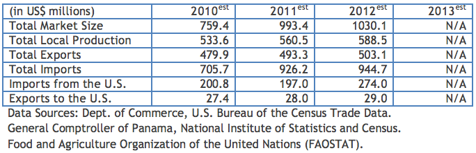
Bulk Agricultural Products
High commodity prices and increased demand for yellow corn sent this category to an all time high. Most important products are yellow corn ($69.9 million, all from the U.S.), wheat ($36.6 million, all from the U.S.), and “paddy” rice ($36.2 million, 99% from the U.S.).
Market Estimates
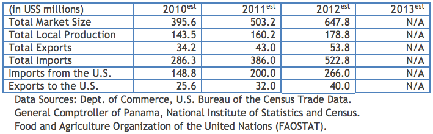
Intermediate Agricultural Products
High demand for soybean meal ($57.5 million) continues to drive this sector, which is mainly used for chicken and pork production. All soybean meal imports are from the U.S.
Market Estimates
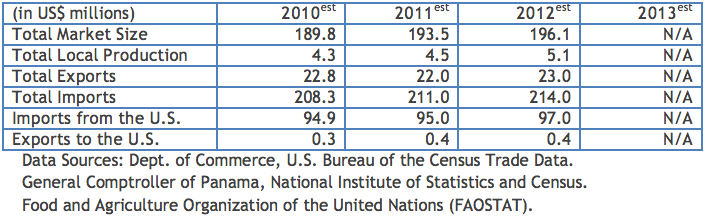
Automotive Parts & Service Equipment: A Top Export Prospect for Panama
Market Estimates
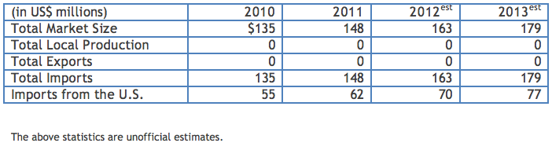
Overview
The market for new automobiles showed some recovery in 2011, after a significant decline in the last previous years. Approximately 40,000 new cars were sold in 2011, down from a record-setting 41,000 in 2008. As a result, demand for automotive parts and service equipment has increased. The automotive inventory in Panama is estimated at 650,000 units. U.S. participation in the automotive parts and service market is significant, with a market share of more than 40%. The main competitors are Japan, Korea, and Taiwan. However, the U.S. market position will improve as sales of U.S. cars increase. Demand will also remain strong for U.S.-made car parts and accessories for Japanese models. Import duties for automotive parts are 10-15% over CIF (customs, insurance, and freight) value. There are no import restrictions on these products. Sub-sectors offering the best market opportunities are servicing equipment, tubes and tires, and engine parts.
NB: in July 2010 the Government of Panama changed the import duty structure for imported cars, by lowering import duties but then applying a sales tax of approximately 20% for both new and used cars. However, these changes have not had much of an impact on the importation of new car or automotive parts.
Sub-Sector Best Prospects
Good prospects for U.S. exports include engine parts, pumps, filters, batteries, ignition parts, spark plugs, lamps, body parts, brake parts, shock absorbers, tires, exhaust components, and used or remanufactured parts especially for buses, dump trucks, and other commercial vehicles.
Opportunities
The expansion of the Panama Canal, a $5.25 billion project, will bring excellent opportunities for U.S. exporters of auto and truck parts. In addition, the Government of Panama started in early 2011 to replace the entire bus fleet serving Panama City. Since the new bus system will replace over 1,500 poorly maintained buses currently on the road, we expect a step order increase in maintenance and parts demands. In addition, the Government has imposed new regulations on the taxi service, which may lead to an increase in demand for maintenance as well.
Web Resources
Building Products: A Top Export Prospect for Panama
Return to top
Market Estimates
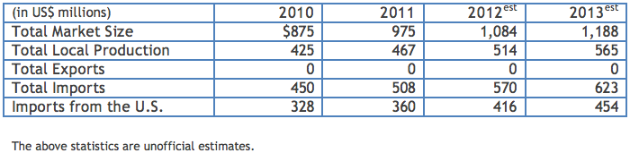
Overview
The construction sector in Panama has continued to grow, but the rate of growth slowed down in the last two years as a result of the world economic situation. Growth is slowly increasing in 2012 again as the construction of the new Panama Canal locks is advancing. The Government of Panama is currently driving much of the activity in this sector: in addition to the Canal expansion, the Government is expanding highways, building a $2 billion Metro system, a network of hospitals, and renovating airports throughout the country. For an overview of the Government of Panama’s plans in public infrastructure – which in addition to the Canal might amount to $15 billion in investments over the next 5 years – please visit the following link: http://export.gov/panama/majorprojectsinpanama.
The majority of construction in recent years was in middle to high-income apartments and commercial buildings, but the construction activity is now concentrating on low-cost housing and high-end suburban housing, as well as infrastructure. The growth in the construction sector has been fed by retiring baby boomers from the U.S., as well as immigrants from South America and Europe. A growing demand exists for after-construction building products used for improving, decorating or modifying existing buildings. U.S. building products are well received because of their perceived quality and competitive price. U.S. products in this sector enjoy a market share of over 60%.
One area of growth that seems to be sustained is in the area of lower cost housing in the growing exurbs of Panama. Because Panama has some of the lowest interest rates in Latin America and the Government of Panama is promoting home purchase financing, middle class Panamanians can borrow against a home purchase for up to 30 years at rates as low as 5%. As a result, there is a building boom on the outskirts of the Panama metro area, where new malls are providing anchors.
Major competitors are Taiwan, Italy and Spain. There are no significant restrictions on imported products. Import duties are in the range of 5 to 15% over customs, insurance, and freight (CIF) value.
Sub–Sector Best Prospects
The demand is especially strong for gypsum board, lighting, and roofing/flooring products. The Canal project will require massive amount of cement, aggregate products and steel.
Opportunities
Housing projects, construction of new hotels in Panama City, and infrastructure projects will continue to generate a strong demand for building materials.
Web Resources
- American Chamber of Commerce in Panama
- Business Panama
- Panama Chamber of Commerce
- Expocomer (Commercial Trade Show)
- Panamanian Construction Chamber
- Ministry of Housing and Urban Development
Computers and Peripherals: A Top Export Prospect for Panama
Return to top
Market Estimates
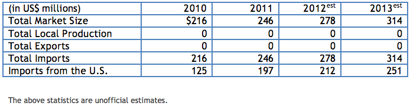
Overview
The following factors are responsible for the continued positive outlook of this sector:
- Office automation is a growing trend in both the public and private sectors.
- Import duties for computers (average 7% over CIF value) are relatively low.
- There are many accessible computer suppliers both locally and abroad, particularly in the Miami area.
- There is a growing computer culture, which resulted from government programs aimed at increasing the use of computers/Internet, and modernization of existing systems in government offices as well as in public schools.
- There is a close connection with the U.S., particularly among young Panamanians who have gone to U.S. schools or look with favor on the social networking culture. Internet services, computer magazines, journals, and other literature from the U.S. are widely available.
Computer products from the U.S. are well received and are perceived as incorporating state-of-the-art technology. The U.S. has a strong position in this market with a market share over 60%. Prices for U.S. computers and peripherals are competitive against products from Korea, Taiwan and Japan. The most promising end users are banks, commercial establishments, universities, the Panama Canal, and government organizations.
Sub-Sector Best Prospects
Best prospects are personal computers, LAN equipment, laptops, and laser printers.
Opportunities
The government is a major computer user. It has been committed to increasing use and modernization of computer systems and has promoted the Internet access for most of the population. The Panama Canal and the banking sector are also important buyers of computer equipment and are always current with technology. The Panama Canal has set a high standard for the rest of the government by publicizing all public tenders, both upcoming and awarded, in a fully searchable database that is web-accessible to the public.
Web Resources
- American Chamber of Commerce in Panama
- Business Panama
- Panama Chamber of Commerce
- Expocomer (Commercial Trade Show)
- IT and Telecom Chamber of Panama (CAPATEC)
- Government of Panama’s Secretariat of Science/Technology/Innovation
- Panama Canal Authority
Construction Equipment: A Top U.S. Export Prospect for Panama
Return to top
Market Estimates
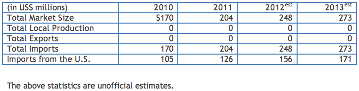
Overview
The construction sector in Panama continues to be leading the growth of the national economy. A number of projects such as the $5.2 billion expansion of the Panama Canal, the completion of Panama’s bay cleaning project, some mining projects, the metro project, and the construction of a number of tourism and housing projects will keep the demand strong for heavy equipment and construction machinery for at least the next few years. For an overview of the Government of Panama’s plans in public infrastructure – which in addition to the Canal might amount to $15 billion in investments over the next 5 years – please visit the following link: http://export.gov/panama/majorprojectsinpanama.
U.S. construction equipment is well received because of its perceived quality and competitive price. U.S. products in this sector enjoy a market share of over 50%. Major competitors are Japan, Korea, Sweden and England. There are no significant restrictions on imported products. With implementation of the U.S. Free Trade Agreement with Panama expected in the coming year, we expect U.S. construction equipment to continue to be attractive to Panamanian buyers.
Sub-Sector Best Prospects
Products offering the best opportunities are earth moving machinery, hydraulic excavators, off-road trucks, wheeled loaders, and cranes.
Opportunities
The expansion of the Panama Canal is generating a great demand for all kinds of construction equipment, especially excavators, off-road trucks, and all kind of earth moving equipment. The project entailed massive excavation on both ends of the Canal as well as the construction of the third set of locks capable of accommodating the Post-Panamax vessels. The $2 billion Metro project is well underway as well. And Canadian-based Inmet Mining has received environmental approval to go forward on a $6 billion copper mining investment, which will rival the Panama Canal’s foreign earnings when complete.
Web Resources
- American Chamber of Commerce in Panama
- Business Panama
- Panama Chamber of Commerce
- Expocomer (Commercial Trade Show)
- Panamanian Construction Chamber
- Panama Canal Authority
Electrical Power Equipment: A Top U.S. Export Prospect for Panama
Return to top
Market Estimates
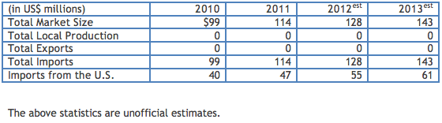
Overview
Panama has an installed capacity of approximately 2,000 MW, over 50% of which is hydropower. Since Panama experiences a dry season, it supplements hydropower with thermal generation, primarily fuelled by bunker. The net cost to end users is approximately $.12/kW h, much of which is attributable to generating costs. Panama is seeking to lower this cost, as well as smooth out the supply, in order to increase its competitiveness for foreign direct investment. For comparison with electricity rates in other countries, including the U.S., please refer to the U.S. Department of Energy’s Energy Information Administration table.
Panama’s demand for electricity is growing by approximately 50 MW per year. The growth of the construction sector has generated a steady demand for electricity in the last 5-7 years. This growth is expected to continue during the next few years driven by the projected increase in low cost housing construction and the implementation of a number of infrastructure projects, including the expansion of the Panama Canal. The electric sector in Panama is controlled by the private sector with the exception of the transmission company which is fully owned and operated by the government.
The Panamanian market is very receptive to U.S. electrical power equipment. Its high quality, durability, competitive prices, quick delivery and service capability are the main factors behind this preference. Price and quality are the main factors in selecting equipment suppliers, followed by after-sale service, which includes technical assistance.
Competitors come principally from Sweden, Italy, Brazil, Germany and England. Panama has no particular standards and regulations for power generation equipment. All U.S. made equipment is readily accepted in Panama.
Sub-Sector Best Prospects
The market offers excellent opportunities for both hydroelectric generators, especially small and medium size plants, and thermo generators. There is strong interest by several companies to develop non-traditional energy sources and the government is expected to play a stronger role in promoting the use of these technologies. The U.S. Trade and Development Agency (USTDA) published a report in March 2010 on renewable energy projects in Central America, including Panama, which provides more specifics. To view this report, please click on the following link: http://buyusainfo.net/docs/x_827397.pdf.
Opportunities
The Government of Panama passed Law No. 45 of August 4, 2004 to provide a number of incentives for the construction and development of new electric generation plants, especially hydroelectric plants (up to 20 MW) and other clean energy sources. Also, a new law to promote wind power generation was passed in 2011.
Web Resources
Financial Services: A Top U.S. Export Prospect for Panama
Return to top
Market Estimates
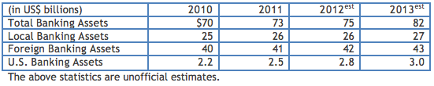
Overview
Panama is an international banking center and this area continues to be one of the most dynamic parts of the economy. As of December 2011, Panama's 93 banks reported total assets of US$73 billion, a 3 percent increase over 2010. In 2011, approximately 9 percent of the total credit portfolio represented loans to the public sector. Loans to the private sector in Panama reached US20 billion, or 96 percent of total credit. The three largest loan sectors were trade and commerce, mortgages, and consumer lending (79 percent of total credit to the private sector).
Panama uses the US dollar as its legal tender, which has contributed to historically low inflation for Latin America. Credit is widely available at relatively low rates for Panamanian businesses and individuals purchasing such large ticket items as houses and cars.
The Government of Panama allows three classes of operations. General License banks operate full service banks in Panama and compete for domestic deposits and loans. International License ("Offshore") banks can only accept deposits from persons or organizations located overseas. Representative Offices can only perform representational activities. There are also two state-owned deposit-taking institutions. Foreign and Panamanian banks compete on equal terms. Banks are members of the Panamanian Banking Association (Panamanian and Foreign Banks) and are licensed and regulated by the Banking Supervisory Authority (Superintendencia de Bancos). Panama’s banking system does not have a deposit insurance scheme.
Sub-Sector Best Prospects
Best opportunities are in the following sectors: trade and commerce, mortgages and consumer lending.
Opportunities
Although the competition in the banking sector has increased in recent years, there is great potential in several areas such as banking consultant services, investment banking, asset management and banking correspondence services in the U.S.
Web Resources
- Banking Regulatory Organization (Superintendencia de Bancos)
- Panamanian Banking Association
- Ministry of Economy and Finance
- American Chamber of Commerce in Panama
- Panama Chamber of Commerce
Franchising: A Top U.S. Export Prospect for Panama
Return to top
Market Estimates
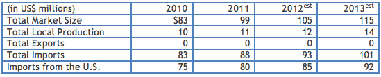
Overview
The Franchising sector in Panama offers excellent opportunities for U.S. companies. Panama is highly receptive to U.S. franchise concepts and the economy is showing excellent and consistent growth.
Foreign franchises comprise 95 percent of the total number of franchises in the country. The U.S. is the market leader but competition is increasing from other countries such as Colombia, Guatemala, El Salvador, and some European countries. Competitive prices, product quality, and strong promotion are the main factors determining successful market penetration. There are no major restrictions for franchise operations in Panama. Because the U.S. Dollar is legal tender in Panama and there are well-developed banking systems, business transactions are substantially easier than in other countries. Most banks are familiar with the franchise business.
Sub-Sector Best Prospects
The market is continuing a diversification trend with new franchises entering the market in different sectors such as house cleaning, security services, beauty services, flower arrangements, mail, and packaging services.
Opportunities
For historical reasons, Panamanians are receptive to U.S. culture and American business. U.S. franchises are well regarded and accepted in Panama. Many Panamanian have traveled to the U.S. and are familiar with U.S. franchise concepts.
Web Resources
Ports and Shipbuilding Equipment: A Top U.S. Export Prospect for Panama
Return to top
Market Estimates
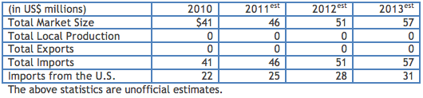
Overview
Because of its strategic location Panama is a key maritime center. The Panama Canal has historically been the symbol of Panama’s maritime activities. Panama’s traditional main ports, Cristobal on the Atlantic and Balboa on the Pacific, were privatized in the 1990s. Both ports are now modern facilities run by Hutchison Whampoa (Hong Kong) and are capable of handling increased container traffic. Additionally, two major container ports operate on the Atlantic: Manzanillo International Terminal (MIT), operated by the Seattle, WA-based Carrix, and Coco Solo operated by Evergreen Marine Corporation (Taiwan). Port Singapore Authority (PSA) has recently initiated a new container port at the Pacific end of the Canal, close to Panama Pacifico’s extensive logistics parks. Panama’s container handling capability has increased from 250,000 in 1997 to over 5 million in 2011.
A trans-isthmian railroad, built by the U.S. firms Kansas City Southern and Mi-Jack Products Inc., has been in operation since 2001. The railroad allows for surface container multimodal transshipment. The Panamanian ports are among the most active ports in the region and this situation is expected to continue in the near future, as the world economy show signs of recovery.
The U.S. has a strong position in the port equipment market, with a market share of over 50 percent. Major competitors are Korea, Japan, Germany, and the People’s Republic of China.
Sub-Sector Best Prospects
This increased port activity offers excellent opportunities for U.S. port equipment exporters. The following product categories enjoy good demand: quay cranes, container cranes, forklifts, top loaders, rubber tire gantry cranes, power packs, and flatbeds. Additionally, the new ports offer opportunities for material handling equipment such as small forklifts, small trucks, and similar equipment.
Opportunities
As the world economy recovers from the global crisis and the Canal expansion is completed, Panamanian ports will continue showing a strong growth. This will generate increased business opportunities for port-related activities, including port equipment, dredges, consulting services, and fuel supplies.
When completed, the expansion of the Panama Canal will allow all-water routes for container ships carrying up to 12,500 TEUs (twenty-foot equivalent units). Currently the largest container vessels that can pass through – referred to as Panamax – carry 5,000 TEUs. A number of analysts believe that the expanded Canal will increase transshipment activity dramatically. And in response to this prospect, the ports in Panama are investing heavily in dredging as well as purchasing such equipment as larger cranes.
Web Resources
- Maritime Chamber of Commerce
- Government of Panama’s Maritime Authority
- American Chamber of Commerce in Panama
- Panama Chamber of Commerce
- Expocomer (Commercial Trade Show)
Security and Safety Equipment: A Top U.S. Export Prospect for Panama
Return to top
Market Estimates
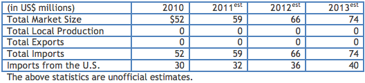
Overview
The market for security and safety equipment continues to present a very good outlook. While the crime rate is still relatively low, particularly by Latin American standards, it has risen dramatically in the last few years and there is increasing public awareness of the need to respond.
Commercial institutions and households are usual targets for armed assaults. There is also an increasing need for security equipment in residential areas and public places. Because of raising labor costs, many businesses and households are automating security. Additionally, the boom in the construction sector and the expansion of the Panama Canal is generating strong demand for safety equipment.
The United States has kept a strong presence in the security and safety equipment sector with more than 50 percent market share during recent years. U.S. products are of high quality. Major competitors are from Japan, Korea and Germany. There are no restrictions on the entry of security and safety equipment. U.S. and European standards are accepted in Panama. Main users are banks, the Panama Canal, retailers, ports, hotels, airports, hospitals, and large local and multinational corporations.
Sub-Sector Best Prospects
Best sales prospects are electronic surveillance equipment, fire and burglar alarms, smoke detectors, and safe/strong boxes. Also, car alarm systems are always in strong demand. All types of safety equipment such as gloves, eyeglasses, harnesses, vests, etc., are in great demand.
Opportunities
New gated communities in Panama City and condominiums are increasing the use of surveillance electronic equipment. The Panama Canal is also a major user of security and safety equipment, as well as the ports, which are among the largest in the region.
Web Resources
Telecommunications Equipment: A Top U.S. Export Prospect for Panama
Return to top
Market Estimates
Overview
After privatization in 1998, the telecommunications sector in Panama has shown strong growth. Cable & Wireless (a British company) acquired the operation of the national utility. Cable & Wireless improved and expanded a number of services, digitalized all switching stations and upgrading transmission lines to the latest technology. Additionally, four cellular companies are now operating in Panama: Cable & Wireless (England), Telefonica (Spain), Claro (Mexico), and Digicel (Ireland). There are over 500,000 fixed telephone lines in the country and over 5 million cellular lines, giving Panama one of the highest teledensity rates in Latin America. Main competitors in the market are the United Kingdom, Japan, Sweden, France and Canada.
Sub-Sector Best Prospects
Best products are PABX systems, radio trunking systems, satellite-based telecommunications facilities, wireless systems and fiber optics cable.
Opportunities
The competition in the cellular telephony sector opened new opportunities for U.S. exporters of equipment such as towers and a variety of supporting equipment. Additionally, Cable & Wireless and other companies that recently entered the market continue to modernize the fixed telephone system thus bringing opportunities for exporters of switching equipment, handsets, and a full range of equipment and accessories.
The Government of Panama has embarked upon an expansion of wireless internet access to the general population across the nation. Additionally, there is an ongoing government effort to modernize the telecommunications services in the different public organizations, including hospitals, financial entities, and public universities.
Web Resources
Return to table of contents
Chapter 10: Resources for Doing Business in Panama
Return to top
This publication gives you a listing of the key resources that U.S. companies should find useful in exploring export or investment opportunities for Panama.
However, we encourage you to contact us first to discuss how we may able to assist you.
Sections
- U.S. Embassy Panama Contacts
- Washington, DC Contacts
- Ministries and Government-Owned Agencies in Panama
- Additional Resources in Panama
- Market Research for U.S. Exporters
- Upcoming Trade Events
U.S. Embassy Panama Contacts
U.S. Commercial Service, U.S. Department of Commerce Tel: (507) 317-5000 Fax: (507) 317-5573 www.export.gov/panama
Daniel T. Crocker, Senior Commercial Officer Tel : (507) 317-5388 Email: Daniel.Crocker@trade.gov
- Enrique Tellez, Senior Commercial Specialist Tel : (507) 317-5080 Email: Enrique.Tellez@trade.gov
Jeane A. de Zuniga, Commercial Specialist Tel : (507) 317-5392 Email: Jeane.Zuniga@trade.gov
Diana Lozano, Commercial Assistant Tel: (507) 317-5242 Email: Diana.Lozano@trade.gov
Economic Section, U.S. Department of State Jonathan A. Plowman, Counselor for Economic Affairs Tel: (507) 317-5301 Email: PlowmanJA@state.gov
Political Section, U.S. Department of State Debra Hevia, Counselor for Political Affairs Tel: (507) 317-5122 Email: HeviaDL@state.gov
Foreign Agricultural Service, U.S. Department of Agriculture Arlene Villalaz, Agricultural Specialist Tel: (507) 317-5297 Email: Arlene.Villalaz@fas.usda.gov
U.S. Consular Section Tel: (507) 317- 5332 Email: Panama-CG@state.gov
American Citizen Services Tel: (507) 317- 5000 Email: Panama-ACS@state.gov http://panama.usembassy.gov/american_citizen_services_unit.html
U.S. Embassy Panama, Mailing Address: 9100 Panama City Pl. Washington D.C. 20521-9100 Tel: (507) 317-5000 Fax: (507) 227-1964
Washington, DC – based Contacts
U.S. Department of Commerce Leah Markowitz, Panama Desk Officer 14th & Constitution Ave. NW Washington, D.C. 20230 Tel: (202) 482-4464 Fax: (202) 482-4157 Email: Leah.Markowitz@trade.gov
U.S. Department of State Kelsey L. Cambronne, Panama Desk Officer Dept. WHA/CEN-HST Room 5906 2201 C Street NW Washington, D.C. 20520 Tel: (202) 482-647-4161 Fax: (202) 482-647-2597 Email: CambronneKL@state.gov
Overseas Private Investment Corporation Mark Stuckart, Special Assistant Insurance Department 1100 New York Avenue, N.W. Washington, DC 20527 Tel: (202) 336-8589 Fax: (202) 408-9866 Email: Mark.Stuckart@opic.gov www.opic.gov
Export-Import Bank of the U.S. Xiomara Creque-Bromberg, Regional Director Americas 811 Vermont Avenue, NW Washington, DC 20571 Tel: (202) 565-3921 ext. 3916 Fax: (202) 565-3931 Email: Xiomara.Creque@exim.gov www.exim.gov
U.S. Trade and Development Agency Nathan Young, Panama Country Manager 1621 N. Kent St., Suite 300 Arlington, VA 2209-2131 Tel: (703) 875-4357 Fax: (703) 875-4009 Email: NYounge@ustda.gov www.ustda.gov
Embassy of Panama Ambassador Mario Jaramillo 2862 McGill Terrace NW Washington, DC 20008 Tel: (202) 483-1407 Fax: (202) 483-8413 www.embassyofpanama.org
Ministries and Government-Owned Agencies in Panama
Ministerio de Comercio e Industrias (Ministry of Commerce and Industry)
Ricardo Quijano, Minister
P.O. Box 0815-01119
Panama, Republic of Panama
Tel: (507) 560-0600
Fax: (507) 560-0663
www.mici.gob.pa
Vice Ministerio de Comercio Exterior Jose Pacheco, Vice Minister P.O. Box 0815-01119 Panama, Republic of Panama Tel: (507) 560-0600 Fax: (507) 560-0653 www.vicomex.gob.pa
Ministerio de Desarrollo Agropecuario (Ministry of Agricultural Development) Oscar Osorio, Minister P.O. Box 0816-01611 Panama, Republic of Panama Tel: (507) 507-0601 Fax: (507) 266-2943 www.mida.gob.pa
Ministerio de Economia y Finanzas (Ministry of Economics and Finance) Frank De Lima, Minister P.O. Box 0816-02836 Panama, Republic of Panama Tel: (507) 506-6753 Fax: (507) 507-7045 www.mef.gob.pa
Ministerio de Salud (Ministry of Health) Dr.Franklin Vergara, Minister P.O. Box 0816-06812 Panama, Republic of Panama Tel: (507) 512-9400 Fax: (507) 212-9240 www.minsa.gob.pa
Ministerio de Obras Publicas (Ministry of Public Works) Francisco Suarez, Minister P.O. Box 0816-06734 Panama, Republic of Panama Tel: (507) 507-9400 Fax: (507) 507-9419 www.mop.gob.pa
Autoridad Marítima Nacional (National Maritime Authority) Roberto Linares, Administrator P.O. Box 0816-01548 Panama, Rep. of Panama Tel: (507) 501-5000 Fax: (507) 501-5405 www.autoridadmaritima.gob.pa
Administracion de la Zona Libre de Colon (Colon Free Zone Administration) Leopoldo Benedetti, General Manager P.O. Box 0302-00512 Colon, Republic of Panama Tel: (507) 475-9512 Fax: (507) 475-9628 www.zonalibredecolon.com.pa
Autoridad Aeronautica Civil (AAC) - (National Aeronautics Authority) Rafael Barcenas, Director P.O. Box 03073-03187 Panama, Republic of Panama Tel: (507) 501-9000 Fax: (507) 501-9487 www.aeronautica.gob.pa
Instituto de Acueductos y Alcantarillados Nacionales (IDAAN) - (National Water Works Company) Manuel Gonzalez Ruiz, Executive Director P.O. Box 0816-1535 Panama, Republic of Panama Tel: (507) 523-8500 Fax: (507) 522-8502 www.idaan.gob.pa
Inter-American Development Bank (Panama office) Marcelo Antinori, Representative P.O. Box 0816-02900 Panama, Rep. of Panama Tel: (507) 206-0900 Fax: (507) 206-0999 www.iadb.org
Additional Resources in Panama
American Chamber of Commerce and Industry of Panama (AmCham) Affiliate of the U.S. Chamber of Commerce and Latin American Trade Coalition in Washington, DC. P.O. Box 0843-0152 Panama, Republic of Panama Maurice Belanger, Executive Director Tel: (507) 301-3881 Fax: (507) 301-3882 Email: executivedirector@panamcham.com www.panamcham.com
U.S. - Panama Business Council Juan B. Sosa, President 5353 Memorial Drive #2041 Houston, TX, 77007 Tel. 713-426-0554 Fax. 713-426-0375 E-mail: panamerica@msn.com
Market Research
Return to top
For market opportunities in Panama, we suggest that you first review our Doing Business in Panama guide. To view market research reports on opportunities in other countries, please go to the following website. Please note that these reports are only available to U.S. citizens and U.S. companies. Registration to the site is required, but free of charge.
Trade Events
Return to top
Please click on the link below for information on upcoming trade events. http://export.gov/tradeevents/index.asp.
For More Information
The U.S. Commercial Service in Panama can be contacted via e-mail at: daniel.crocker@trade.gov; Phone: 011-507-317-5000; or visit our website.
The U.S. Commercial Service — Your Global Business Partner
With its network of offices across the United States and in more than 75 countries, the U.S. Commercial Service of the U.S. Department of Commerce utilizes its global presence and international marketing expertise to help U.S. companies sell their products and services worldwide. Locate the U.S. Commercial Service trade specialist in the U.S. nearest you by visiting http://www.export.gov/eac.
Disclaimer: The information provided in this report is intended to be of assistance to U.S. exporters. While we make every effort to ensure its accuracy, neither the United States government nor any of its employees make any representation as to the accuracy or completeness of information in this or any other United States government document. Readers are advised to independently verify any information prior to reliance thereon. The information provided in this report does not constitute legal advice. The Commercial Service reference to or inclusion of material by a non-U.S. Government entity in this document is for informational purposes only and does not constitute an endorsement by the Commercial Service of the entity, its materials, or its products or services.
International copyright, U.S. Department of Commerce, 2012. All rights reserved outside of the United States.